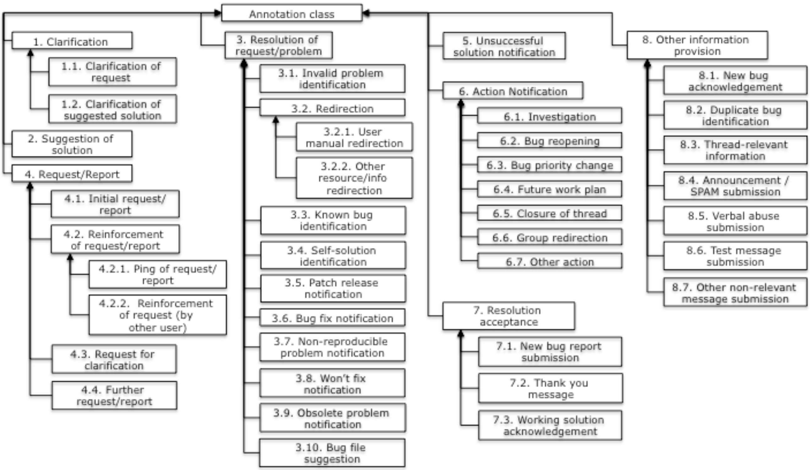

Metrics Reference Guide
This guide describes the historic and transient metric providers, as well as factoids, provided by the Scava platform.
- Historic Metric Providers for:
- Transient Metric Providers for:
- Factoids for:
Historic Metric Providers
Historic metrics maintain a record of various heuristics associated with a specific open source project over its lifetime. They typically depend on the results from one or more transient metrics and are typically displayed in the Scava dashboards.
Historic Metric Providers for Bug Trackers
The following Historic Metric Providers are associated with Issue trackers
org.eclipse.scava.metricprovider.historic.bugs.bugs
- Short name: historic.bugs.bugs
- Friendly name: Number of bugs per day per bug tracker
This metric computes the number of bugs per day for each bug tracker seperately. It also computes additional information such as average comments per bug, average comments per user, average requests and/or replies per user and bug.
-
Depends-on :
org.eclipse.scava.metricprovider.trans.bugs.bugmetadata,org.eclipse.scava.metricprovider.trans.bugs.activeusers -
Returns :
BugsBugsHistoricMetricwhich contains:Variable Type bugTrackers List<DailyBugTrackerData>numberOfBugs intaverageCommentsPerBug floataverageRequestsPerBug floataverageRepliesPerBug floataverageCommentsPerUser floataverageRequestsPerUser floataverageRepliesPerUser float
Additional Information :
- DailyBugTrackerData :
StringbugTrackerIdintnumberOfBugs
Visualisation Output Information :
- BugsHistoricMetricProvider :
idbugs.bugsidbugs.comments-bugaverageidbugs.comments-useraverageidbugs.requests-bugaverageidbugs.requests-useraverageidbugs.replies-bugaverageidbugs.replies-useraverageidbugs.requestsreplies-useraverageidbugs.requestsreplies-bugaverage
org.eclipse.scava.metricprovider.historic.bugs.comments
- Short name: historic.bugs.comments
- Friendly name: Number of bug comments per day per bug tracker
This metric computes the number of bug comments submitted by the community (users) per day for each bug tracker.
-
Depends-on :
org.eclipse.scava.metricprovider.trans.bugs.comments -
Returns :
BugsCommentsHistoricMetricwhich contains:Variable Type Bugs List<DailyBugData>numberOfComments intcumulativeNumberOfComments int
Additional Information :
- DailyBugData :
StringbugTrackerIDintnumberOfCommentsintcumulativeNumberOfComments
Visualisation Output Information :
- CommentsHistoricMetricProvider :
idbugs.commentsidbugs.cumulativeComments
org.eclipse.scava.metricprovider.historic.bugs.emotions
- Short name: historic.bugs.emotions
- Friendly name: Number of emotions per day per bug tracker
This metric computes the emotional dimensions present in bug comments submitted by the community (users) per day for each bug tracker. Emotion can be 1 of 6 (anger, fear, joy, sadness, love or surprise).
-
Depends-on :
org.eclipse.scava.metricprovider.trans.bugs.emotions -
Returns :
BugsEmotionsHistoricMetricwhich contains:Variable Type bugData List<BugData>Dimensions List<Dimensions>
Additional Information :
-
BugData :
StringbugTrackerIDintnumberOfCommentsintcumulativeNumberOfComments
-
Dimensions :
StringbugTrackerIdStringemotionLabel (anger,fear,joy,sadness,love,surprise)intnumberOfCommentsintcumulativeNumberOfCommentsfloatpercentagefloatcumulativePercentage
Visualisation Output Information :
- EmotionsHistoricMetricProvider :
idbugs.emotions.cumulativeCommentsidbugs.emotions.cumulativeCommentPercentagesidbugs.emotions.commentsidbugs.emotions.commentPercentages
org.eclipse.scava.metricprovider.historic.bugs.migrationissues
- Short name: historic.bugs.migrationissues
- Friendly name: Migration Issues Detection in Bug Trackers per day per bug tracker
This metric stores how many migration issues have been found per day for each bug tracker.
-
Depends-on :
org.eclipse.scava.metricprovider.trans.bugs.migrationissues -
Returns :
BugTrackerMigrationIssueHistoricMetricwhich contains:Variable Type dailyBugTrackerMigrationData List<DailyBugTrackerMigrationData>
Additional Information :
- DailyBugTrackerMigrationData :
StringbugTrackerIdList<String>bugsId;intnumberOfBugs
Visualisation Output Information :
- BugTrackerMigrationIssueHistoricMetricProvider :
idbugs.dailymigrationissues
org.eclipse.scava.metricprovider.historic.bugs.migrationissuesmaracas
- Short name: historic.bugs.migrationissuesmaracas
- Friendly name: Migration Issues Detection along with Maracas in Bug Trackers per day per bug tracker
This metric stores how many migration issues have been found containing changes detected with MARACAS per day for each bug tracker.
-
Depends-on :
org.eclipse.scava.metricprovider.trans.bugs.migrationissuesmaracas -
Returns :
BugTrackerMigrationIssueMaracasHistoricMetricwhich contains:Variable Type dailyBugTrackerMigrationMaracasData List<DailyBugTrackerMigrationMaracasData>bugTrackerMigrationMaracasData List<BugTrackerMigrationMaracasData>
Additional Information :
- DailyBugTrackerMigrationMaracasData :
StringbugTrackerIdList<String>bugsId;intnumberOfIssues
- BugTrackerMigrationMaracasData :
StringbugTrackerIdStringbugId;List<String>changesAndMatchingPercentage
Visualisation Output Information :
- BugTrackerMigrationIssueMaracasHistoricMetricProvider :
idbugs.dailymigrationissuesmaracasidbugs.migrationissuesmaracas.changes
org.eclipse.scava.metricprovider.historic.bugs.newbugs
- Short name: historic.bugs.newbugs
- Friendly name: Number of new bugs per day per bug tracker
This metric computes the number of new bugs reported by the community (users) per day for each bug tracker. A small number of bug reports can indicate either a bug-free, robust project or a project with a small/inactive user community.
-
Depends-on :
org.eclipse.scava.metricprovider.trans.bugs.newbugs -
Returns :
BugsNewBugsHistoricMetricwhich contains:Variable Type dailyBugData List<DailyBugData>numberOfBugs intcumulativeNumberOfBugs int
Additional Information :
- DailyBugData :
StringbugTrackerIdintnumberOfBugsintcumulativeNumberOfBugs
Visualisation Output Information :
- NewUsersHistoricMetricProvider :
idbugs.cumulativeNewUsersidbugs.newUsers
org.eclipse.scava.metricprovider.historic.bugs.newusers
- Short name: historic.bugs.newusers
- Friendly name: Number of new users per day per bug tracker
This metric computes the number of new users per day for each bug tracker seperately.
-
Depends-on :
org.eclipse.scava.metricprovider.trans.bugs.activeusers -
Returns :
BugsNewUsersHistoricMetricwhich contains:Variable Type bugTrackers List<DailyBugTrackerData>numberOfNewUsers intcumulativeNumberOfNewUsers int
Additional Information :
- DailyBugTrackerData :
StringbugTrackerIdintnumberOfNewUsersintcumulativeNumberOfNewUsers
Visualisation Output Information :
- NewUsersHistoricMetricProvider :
idbugs.cumulativeNewUsersidbugs.newUsers
org.eclipse.scava.metricprovider.historic.bugs.opentime
- Short name: historic.bugs.opentime
- Friendly name: Average duration to close an open bug
This metric computes the average duration between creating and closing bugs. Format: dd:HH:mm:ss:SS, where dd=days, HH:hours, mm=minutes, ss:seconds, SS=milliseconds.
-
Depends-on :
org.eclipse.scava.metricprovider.trans.bugs.bugmetadata -
Returns :
OpenTimeHistoricMetricProviderwhich contains:Variable Type avgBugOpenTime StringavgBugOpenTimeInDays doublebugsConsidered int
Visualisation Output Information :
- OpenTimeHistoricMetricProvider :
idbugs.bugOpenTimeidbugs.bugOpenTime-bugs
org.eclipse.scava.metricprovider.historic.bugs.patches
- Short name: historic.bugs.patches
- Friendly name: Number of bug patches per day
This class computes the number of bug patches per day, for each bug tracker seperately.
-
Depends-on :
org.eclipse.scava.metricprovider.trans.bugs.patches -
Returns :
PatchesHistoricMetricProviderwhich contains:Variable Type numberOfPatches intcumulativeNumberOfPatches intbugs List<DailyBugData>
Additional Information :
- DailyBugData :
StringbugTrackerIdintnumberOfPatchesintcumulativeNumberOfPatches
Visualisation Output Information :
- PatchesHistoricMetricProvider :
idbugs.cumulativePatchesidbugs.patches
org.eclipse.scava.metricprovider.historic.bugs.requestsreplies
- Short name: historic.bugs.requestsreplies
- Friendly name: Number of request and replies in bug comments per bug tracker
This metric computes the number of requests and replies realting to comments posted to bugs by the community (users) per day for each bug tracker seperately.
-
Depends-on :
org.eclipse.scava.metricprovider.trans.bugs.bugmetadata -
Returns :
BugsRequestsRepliesHistoricMetricwhich contains:Variable Type Bugs List<DailyBugTrackerData>numberOfRequests intnumberOfReplies intcumulativeNumberOfRequests intcumulativeNumberOfReplies int
Additional Information :
- DailyBugTrackerData :
StringbugTrackerIdintnumberOfRequestsintnumberOfRepliesintcumulativeNumberOfRequestsintcumulativeNumberOfReplies
Visualisation Output Information :
- RequestsRepliesHistoricMetricProvider :
idbugs.repliesidbugs.cumulativerepliesidbugs.requestsidbugs.cumulativerequestsidbugs.requestsrepliesidbugs.cumulativerequestsreplies
org.eclipse.scava.metricprovider.historic.bugs.requestsreplies.average
- Short name: historic.bugs.requestsreplies.average
- Friendly name: Average number of requests and replies in bug comments per bug tracker
This metric computes the average number of bug comments considered as request and reply for each bug tracker per day.
-
Depends-on :
org.eclipse.scava.metricprovider.trans.bugs.activeusers -
Returns :
BugsRequestsRepliesHistoricMetricwhich contains:Variable Type bugs List<DailyBugTrackerData>numberOfRequests intnumberOfReplies intcumulativeNumberOfRequests intcumulativeNumberOfReplies int
Additional Information :
- DailyBugTrackerData :
StringbugTrackerIdintnumberOfRequestsintnumberOfRepliesintcumulativeNumberOfRequestsintcumulativeNumberOfReplies
Visualisation Output Information :
- RequestsRepliesHistoricMetricProvider :
idbugs.requests-averageperdayidbugs.requestsreplies-averageperdayidbugs.comments-averageperdayidbugs.replies-averageperday
org.eclipse.scava.metricprovider.historic.bugs.responsetime
- Short name: historic.bugs.responsetime
- Friendly name: Average response time to open bugs per bug tracker
This metric computes the average time in which the community (users) responds to open bugs per day for each bug tracker seperately. Format: dd:HH:mm:ss:SS, where dd=days, HH:hours, mm=minutes, ss:seconds, SS=milliseconds.
-
Depends-on :
org.eclipse.scava.metricprovider.trans.bugs.requestsreplies -
Returns :
BugsResponseTimeHistoricMetricwhich contains:
| Variable | Type |
|---|---|
| bugTrackerId | String |
| avgResponseTimeFormatted | String |
| cumulativeAvgResponseTimeFormatted | String |
| avgResponseTime | float |
| cumulativeAvgResponseTime | float |
| bugsConsidered | int |
| cumulativeBugsConsidered | int |
Visualisation Output Information :
- ResponseTimeHistoricMetricProvider :
idbugs.averageResponseTimeidbugs.cumulativeAverageResponseTimeidbugs.cumulativeAverageResponseTime-bugsidbugs.averageResponseTime-bugs
org.eclipse.scava.metricprovider.historic.bugs.sentiment
- Short name: historic.bugs.sentiment
- Friendly name: Overall sentiment per bug tracker
This metric computes the overall sentiment per bug tracker up to the processing date. The overall sentiment score could be -1 (negative sentiment), 0 (neutral sentiment) or +1 (positive sentiment). In the computation, the sentiment score for each bug contributes equally, regardless of it's size.
-
Depends-on :
org.eclipse.scava.metricprovider.trans.bugs.bugmetadata -
Returns :
BugsSentimentHistoricMetricwhich contains:Variable Type overallAverageSentiment floatoverallSentimentAtThreadBeggining floatoverallSentimentAtThreadEnd float
Visualisation Output Information :
-
SentimentHistoricMetricProvider :
idbugs.averageSentimentidbugs.sentimentAtThreadEndidbugs.sentimentAtThreadBegginingidbugs.sentiment
-
The sentiment related variables above all represent a Polarity value. A polarity value closer to: -1 indicates negative sentiment, closer to 0 indicates neutral sentiment and closer to 1 indicates positive sentiment.
org.eclipse.scava.metricprovider.historic.bugs.severity
- Short name: historic.bugs.severity
- Friendly name: Number of bugs per severity level per bug tracker
This metric computes the number of severity levels for bugs submitted by the community (users) every day for each bug tracker. Specifically, it calculates the number and percentage of bugs that have been categorised into 1 of 8 severity levels (blocker, critical, major, minor, enhancement, normal, trivial, unknown). A bug severity is considered unknown if there is not enough information for the classifier to make a decision. For example, an unanswered bug with no user comment to analyse.
-
Depends-on :
org.eclipse.scava.metricprovider.trans.severityclassification -
Returns :
BugsSeveritiesHistoricMetricwhich contains:Variable Type bugData List<BugData>severityLevels List<ServerityLevel>
Additional Information :
- BugData :
StringbugTrackerIdintnumberOfBugs
- SeverityLevel :
StringbugTrackerIdStringseverityLevel (blocker,critical,major,minor,enhancement,normal,trivial,unknown)intnumberOfBugsintpercentage
Visualisation Output Information :
- SeverityHistoricMetricProvider :
idbugs.severityidbugs.severity.percentages
org.eclipse.scava.metricprovider.historic.bugs.severitybugstatus
- Short name: historic.bugs.severitybugstatus
- Friendly name: Number of each bug status per bug severity level
This metric computes the total number and percentage of each bug status per severity level, in bugs submitted every day, per bug tracker. There are 7 bug status (ResolvedClosed, WontFix, WorksForMe, NonResolvedClosed, Invalid, Fixed, Duplicate) and 8 severity levels (blocker, critical, major, minor, enhancement, normal, trivial, unknown). A bug severity is considered unknown if there is not enough information for the classifier to make a decision. For example, an unanswered bug with no user comment to analyse.
-
Depends-on :
org.eclipse.scava.metricprovider.trans.severityclassification,org.eclipse.scava.metricprovider.trans.bugs.bugmetadata -
Returns :
BugsSeverityBugStatusHistoricMetricwhich contains:Variable Type severityLevels List<SeverityLevel>
Additional Information :
- SeverityLevel :
StringseverityLevel (blocker,critical,major,minor,enhancement,normal,trivial,unknown)intnumberOfBugsintnumberOfWontFixBugsintnumberOfWorksForMeBugsintnumberOfNonResolvedClosedBugsintnumberOfInvalidBugsintnumberOfFixedBugsintnumberOfDuplicateBugsfloatpercentageOfResolvedClosedBugsfloatpercentageOfWontFixBugsfloatpercentageOfWorksForMeBugsfloatpercentageOfNonResolvedClosedBugsfloatpercentageOfInvalidBugsfloatpercentageOfFixedBugsfloatpercentageOfDuplicateBugs
Visualisation Output :
- SeverityBugStatusHistoricMetricProvider :
idbugs.severity.duplicateBugsidbugs.severity.duplicateBugs.percentagesidbugs.severity.fixedBugsidbugs.severity.fixedBugs.percentagesidbugs.severity.invalidBugsidbugs.severity.invalidBugs.percentagesidbugs.severity.nonResolvedClosedBugsidbugs.severity.nonResolvedClosedBugs.percentagesidbugs.severity.resolvedClosedBugsidbugs.severity.resolvedClosedBugs.percentagesidbugs.severity.wontFixBugsidbugs.severity.wontFixBugs.percentagesidbugs.severity.worksForMeBugsidbugs.severity.worksForMeBugs.percentages
org.eclipse.scava.metricprovider.historic.bugs.severityresponsetime
- Short name: historic.bugs.severityresponsetime
- Friendly name: Average response time to bugs per severity level per day
This metric computes the average time in which the community (users) responds to open bugs per severity level per day for each bug tracker. Format: dd:HH:mm:ss:SS, where dd=days, HH:hours, mm=minutes, ss:seconds, SS=milliseconds. Note: there are 8 severity levels (blocker, critical, major, minor, enhancement, normal, trivial, unknown). A bug severity is considered unknown if there is not enough information for the classifier to make a decision. For example, an unanswered bug with no user comment to analyse.
-
Depends-on :
org.eclipse.scava.metricprovider.trans.severityclassification,org.eclipse.scava.metricprovider.trans.bugs.requestsreplies -
Returns :
BugsSeverityBugStatusHistoricMetricwhich contains:Variable Type severityLevels List<SeverityLevel>
Additional Information :
- SeverityLevel :
StringseverityLevel (blocker,critical,major,minor,enhancement,normal,trivial,unknown)StringavgResponseTimeFormattedintnumberOfBugslongavgResponseTime
Visualisation Output Information :
- SeverityResponseTimeHistoricMetricProvider :
idbugs.severity.averageResponseTime
org.eclipse.scava.metricprovider.historic.bugs.severitysentiment
- Short name: historic.bugs.severitysentiment
- Friendly name: Average sentiment per bugs severity level per day
This metric computes for each bug severity level, the average sentiment, sentiment at the begining and end of bug comments posted by the community (users) every day for each bug tracker. Sentiment score could be closer to -1 (negative sentiment), 0 (neutral sentiment) or +1 (positive sentiment). There are 8 severity levels (blocker, critical, major, minor, enhancement, normal, trivial, unknown). A bug severity is considered unknown if there is not enough information for the classifier to make a decision. For example, an unanswered bug with no user comment to analyse.
-
Depends-on :
org.eclipse.scava.metricprovider.trans.severityclassification,org.eclipse.scava.metricprovider.trans.bugs.bugmetadata -
Returns :
BugsSeverityBugStatusHistoricMetricwhich contains:Variable Type severityLevels List<SeverityLevel>
Additional Information :
- SeverityLevel :
StringseverityLevel (blocker,critical,major,minor,enhancement,normal,trivial,unknown)intnumberOfBugsfloataverageSentimentfloatsentimentAtThreadBegginingfloatsentimentAtThreadEnd
Visualisation Output Information :
-
SeveritySentimentHistoricMetricProvider :
idbugs.severity.sentimentidbugs.severity.averageSentimentidbugs.severity.sentimentAtThreadBegginingidbugs.severity.sentimentAtThreadEnd
-
The sentiment related variables above all represent a Polarity value. A polarity value closer to: -1 indicates negative sentiment, closer to 0 indicates neutral sentiment and closer to 1 indicates positive sentiment.
org.eclipse.scava.metricprovider.historic.bugs.status
- Short name: historic.bugs.status
- Friendly name: Number of bugs per bug status per day
This metric computes the total number of bugs that corresponds to each bug status, in bugs submitted every day, per bug tracker. There are 7 bug status (ResolvedClosed, WontFix, WorksForMe, NonResolvedClosed, Invalid, Fixed, Duplicate).
-
Depends-on :
org.eclipse.scava.metricprovider.trans.bugs.bugmetadata -
Returns :
BugsStatusHistoricMetricwhich contains:Variable Type numberOfBugs longnumberOfResolvedClosedBugs intnumberOfWontFixBugs intnumberOfWorksForMeBugs intnumberOfNonResolvedClosedBugs intnumberOfInvalidBugs intnumberOfFixedBugs intnumberOfDuplicateBugs int
Visualisation Output Information :
- StatusHistoricMetricProvider :
idbugs.duplicateBugsidbugs.fixedBugsidbugs.invalidBugsidbugs.nonResolvedClosedBugsidbugs.wontFixBugsidbugs.worksForMeBugsidbugs.resolvedClosedBugs
org.eclipse.scava.metricprovider.historic.bugs.topics
- Short name: historic.bugs.topics
- Friendly name: Labels of topic clusters in bug comments per bug tracker
This metric computes the labels of topic clusters extracted from bug comments submitted by the community (users), per bug tracker.
-
Depends-on :
org.eclipse.scava.metricprovider.trans.topics -
Returns :
BugsTopicsHistoricMetricwhich contains:Variable Type bugTopics List<BugTopic>
Additional Information :
- SeverityLevel :
StringbugTrackerIdList<String>labelsfloatnumberOfDocumentsList<String>commentsId
org.eclipse.scava.metricprovider.historic.bugs.unansweredbugs
- Short name: historic.bugs.unansweredbugs
- Friendly name: Number of unanswered bugs per day
This metric computes the number of unanswered bugs per day.
-
Depends-on :
org.eclipse.scava.metricprovider.trans.bugs.requestsreplies -
Returns :
BugsUnansweredBugsHistoricMetricwhich contains:Variable Type numberOfUnansweredBugs int
Visualisation Output Information :
- UnansweredThreadsHistoricMetricProvider :
idbugs.unansweredBugs
org.eclipse.scava.metricprovider.historic.bugs.users
- Short name: historic.bugs.users
- Friendly name: Number of users, active and inactive per day per bug tracker
This metric computes the number of users, number of active and inactive users per day for each bug tracker separately.
-
Depends-on :
org.eclipse.scava.metricprovider.trans.bugs.activeusers -
Returns :
BugsUsersHistoricMetricwhich contains:Variable Type bugTrackers List<DailyBugTrackingData>numberOfUsers intnumberOfActiveUsers intnumberOfInactiveUsers int
Additional Information :
- DailyBugTrackingData :
StringbugTrackerIdintnumberOfUsersintnumberOfActiveUsersintnumberOfInactiveUsers
Visualisation Output Information :
- UsersHistoricMetricProvider :
idbugs.usersidbugs.activeusersidbugs.inactiveusers
Historic Metric Providers for Newsgroups and Forums
The following Historic Metric Providers are associated with newsgroups.
org.eclipse.scava.metricprovider.historic.newsgroups.articles
- Short name: historic.newsgroups.articles
- Friendly name: Number of articles per day per news group
This metric computes the number of articles submitted by the community (users) per day for each newsgroup separately
-
Depends-on :
org.eclipse.scava.metricprovider.trans.newsgroups.articles -
Returns :
NewsgroupsArticlesHistoricMetricwhich contains:Variable Type dailyNewsgroupData List<DailyNewsgroupData>
Additional Information :
- DailyNewsgroupData :
StringnewsgroupNameintnumberOfArticlesintcummulativeNumberOfArticles
Visualisation Output Information :
- ArticlesHistoricMetricProvider :
idnewsgroups.articlesidnewsgroups.cumulativeArticles
org.eclipse.scava.metricprovider.historic.newsgroups.emotions
- Short name: historic.newsgroups.emotions
- Friendly name: Number of emotions per day per newsgroup
This metric computes the emotional dimensions present in newsgroup comments submitted by the community (users) per day for each newsgroup. Emotion can be 1 of 6 (anger, fear, joy, sadness, love or surprise).
-
Depends-on :
org.eclipse.scava.metricprovider.trans.newsgroups.emotions -
Returns :
NewsgroupsEmotionsHistoricMetricwhich contains:Variable Type newsgroupsData List<Newsgroups>emotionDimension List<Emotion>
Additional Information :
-
NewsgroupsData :
StringnewsgroupNameintnumberOfArticlesintcummulativeNumberOfArticles
-
EmotionDimension :
StringnewsgroupNameStringemotionLabel (anger,fear,joy,sadness,love,surprise)intnumberOfArticlesintcumulativeNumberOfArticlesfloatpercentagefloatcumulativePercentage
Visualisation Output Information :
- EmotionsHistoricMetricProvider :
idnewsgroups.emotions.articlePercentagesidnewsgroups.emotions.cumulativeArticlesidnewsgroups.emotions.cumulativeArticlePercentagesidnewsgroups.emotions.articles
org.eclipse.scava.metricprovider.historic.newsgroups.migrationissues
- Short name: historic.newsgroups.migrationissues
- Friendly name: Migration Issues Detection in articles per day per newsgroup
This metric detects migration issues in articles per day for each newgroup.
-
Depends-on :
org.eclipse.scava.metricprovider.trans.newsgroups.migrationissues -
Returns :
NewsgroupsMigrationIssueHistoricMetricwhich contains:Variable Type dailyNewsgroupsMigrationData List<DailyNewsgroupsMigrationData>
Additional Information :
- DailyBugTrackerMigrationData :
StringnewsgroupNameList<Integer>threadsIdintnumberOfIssues
Visualisation Output Information :
- NewsgroupsMigrationIssueHistoricMetricProvider :
idnewsgroups.dailymigrationissues
org.eclipse.scava.metricprovider.historic.newsgroups.migrationissuesmaracas
- Short name: historic.newsgroups.migrationissuesmaracas
- Friendly name: Migration Issues Detection along with Maracas in articles per day per newsgroup
This metric stores how many migration issues have been found containing changes detected with MARACAS per day for each newsgroup.
-
Depends-on :
org.eclipse.scava.metricprovider.trans.newsgroups.migrationissuesmaracas -
Returns :
NewsgroupMigrationIssueMaracasHistoricMetricwhich contains:Variable Type dailyNewsgroupMigrationMaracasData List<DailyNewsgroupMigrationMaracasData>newsgroupMigrationMaracasData List<NewsgroupMigrationMaracasData>
Additional Information :
- DailyNewsgroupMigrationMaracasData :
StringnewsgroupNameList<Integer>threadsId;intnumberOfIssues
- NewsgroupMigrationMaracasData :
StringnewsgroupName- int threadId;
List<String>changesAndMatchingPercentage
Visualisation Output Information :
- NewsgroupMigrationIssueMaracasHistoricMetricProvider :
idnewsgroups.dailymigrationissuesmaracasidnewsgroups.migrationissuesmaracas.changes
org.eclipse.scava.metricprovider.historic.newsgroups.newthreads
- Short name: historic.newsgroups.newthreads
- Friendly name: Number of new threads per day per newsgroup
This metric computes the number of new threads submitted by the community (users) per day for each newsgroup separately
-
Depends-on :
org.eclipse.scava.metricprovider.trans.newsgroups.threads -
Returns :
NewsgroupsNewThreadsHistoricMetricwhich contains:Variable Type dailyNewsgroupData List<DailyNewsgroupData>
Additional Information :
- DailyNewsgroupData :
StringnewsgroupNameintnumberOfNewThreadsintcummulativeNumberOfNewThreads
Visualisation Output Information :
- NewThreadsHistoricMetricProvider :
idnewsgroups.newThreadsidnewsgroups.cumulativeNewThreads
org.eclipse.scava.metricprovider.historic.newsgroups.newusers
- Short name: historic.newsgroups.newusers
- Friendly name: Number of new users per day per newsgroup
This metric computes the number of new users per day for each newsgroup seperately.
-
Depends-on :
org.eclipse.scava.metricprovider.trans.newsgroups.activeusers -
Returns :
NewsgroupsNewUsersHistoricMetricwhich contains:Variable Type dailyNewsgroupData List<DailyNewsgroupData>
Additional Information :
- DailyNewsgroupData :
StringnewsgroupNameintnumberOfNewUsersintcummulativeNumberOfNewUsers
Visualisation Output Information :
- NewUsersHistoricMetricProvider:
idnewsgroups.cumulativeNewUsersidnewsgroups.newUsers
org.eclipse.scava.metricprovider.historic.newsgroups.requestsreplies
- Short name: historic.newsgroups.requestsreplies
- Friendly name: Number of requests and replies in articles per day
This metric computes the number of requests and replies in newsgroup articles submitted by the community (users) per day for each newsgroup separately.
-
Depends-on :
org.eclipse.scava.metricprovider.trans.requestreplyclassification -
Returns :
NewsgroupsRequestsRepliesHistoricMetricwhich contains:Variable Type dailyNewsgroupData List<DailyNewsgroupData>
Additional Information :
- DailyNewsgroupData :
StringnewsgroupNameintnumberOfRequestsintnumberOfRepliesintcumulativeNumberOfRequestsintcumulativeNumberOfReplies
Visualisation Output Information :
- RequestsRepliesHistoricMetricProvider :
idnewsgroups.requestsidnewsgroups.cumulativerequestsidnewsgroups.repliesidnewsgroups.cumulativerepliesidnewsgroups.requestsrepliesidnewsgroups.cumulativerequestsreplies
org.eclipse.scava.metricprovider.historic.newsgroups.requestsreplies.average
- Short name: historic.newsgroups.requestsreplies.average
- Friendly name: Average number of articles, requests and replies per day
This metric computes the average number of newsgroup articles, including the number of requests and replies within the newsgroup articles per day.
-
Depends-on :
org.eclipse.scava.metricprovider.trans.newsgroups.activeusers -
Returns :
NewsgroupsRequestsRepliesAverageHistoricMetricwhich contains:Variable Type averageArticlesPerDay floataverageRequestsPerDay floataverageRepliesPerDay float
Visualisation Output Information :
- RequestsRepliesAverageHistoricMetricProvider :
idnewsgroups.requestsreplies-averageperdayidnewsgroups.requests-averageperdayidnewsgroups.replies-averageperdayidnewsgroups.comments-averageperday
org.eclipse.scava.metricprovider.historic.newsgroups.responsetime
- Short name: historic.newsgroups.responsetime
- Friendly name: Average response time to threads per day per newsgroup
This metric computes the average time in which the community responds to open threads per day for each newsgroup separately. Format: dd:HH:mm:ss:SS, where dd=days, HH:hours, mm=minutes, ss:seconds, SS=milliseconds.
-
Depends-on :
org.eclipse.scava.metricprovider.trans.newsgroups.threadsrequestsreplies -
Returns :
NewsgroupsResponseTimeHistoricMetricwhich contains:Variable Type newsgroupName StringavgResponseTime longavgResponseTimeFormatted StringthreadsConsidered intcumulativeAvgResponseTimeFormatted StringcumulativeThreadsConsidered int
Visualisation Output Information :
- ResponseTimeHistoricMetricProvider :
idnewsgroups.averageResponseTimeidnewsgroups.cumulativeAverageResponseTimeidnewsgroups.cumulativeAverageResponseTime-threads-
idnewsgroups.averageResponseTime-threads Back to top
Back to top
org.eclipse.scava.metricprovider.historic.newsgroups.sentiment
- Short name: historic.newsgroups.sentiment
- Friendly name: Overall sentiment of newsgroup articles
This metric computes the overall sentiment per newsgroup repository up to the processing date. The overall sentiment score could be -1 (negative sentiment), 0 (neutral sentiment) or +1 (positive sentiment). In the computation, the sentiment score of each thread contributes equally, irrespective of its size.
-
Depends-on :
org.eclipse.scava.metricprovider.trans.newsgroups.sentiment -
Returns :
NewsgroupsSentimentHistoricMetricwhich contains:Variable Type overallAverageSentiment floatoverallSentimentAtThreadBegining floatoverallSentimentAtThreadEnd float
Visualisation Output Information :
-
SentimentHistoricMetricProvider :
idnewsgroups.averageSentimentidnewsgroups.sentimentAtThreadEndidnewsgroups.sentimentAtThreadBegginingidnewsgroups.sentiment
-
The sentiment related variables above all represent a Polarity value. A polarity value closer to: -1 indicates negative sentiment, closer to 0 indicates neutral sentiment and closer to 1 indicates positive sentiment.
org.eclipse.scava.metricprovider.historic.newsgroups.severity
- Short name: historic.newsgroups.severity
- Friendly name: Number of each severity level in newsgroup threads per day
This metric computes the number of each severity levels in threads submitted every day, per newsgroup. There are 7 severity levels (blocker, critical, major, minor, enhancement, normal, trivial).
-
Depends-on :
org.eclipse.scava.metricprovider.trans.severityclassification -
Returns :
NewsgroupsSeveritiesHistoricMetricwhich contains:Variable Type newsgroupData List<Newsgroups>severityLevel List<SeverityLevel>
Additional Information :
-
NewsgroupData :
StringnewsgroupNameintnumberThreads
-
SeverityLevel :
StringnewsgroupNameStringseverityLabel (blocker,critical,major,minor,enhancement,normal,trivial)intnumberOfThreadsfloatpercentage
Visualisation Output Information :
- SeverityHistoricMetricProvider :
idnewsgroups.severityidnewsgroups.severity.percentages
org.eclipse.scava.metricprovider.historic.newsgroups.severityresponsetime
- Short name: historic.newsgroups.severityresponsetime
- Friendly name: Average response time to threads per severity level per day
This metric computes the average time in which the community (users) responds to open threads per severity level per day for each bug tracker. Format: dd:HH:mm:ss:SS, where dd=days, HH:hours, mm=minutes, ss:seconds, SS=milliseconds. Note: there are 7 severity levels (blocker, critical, major, minor, enhancement, normal, trivial).
Average response time to threads per severity level
This metric computes the average response time for newsgroup threads submitted every day, based on their severity levels.
-
Depends-on :
org.eclipse.scava.metricprovider.trans.severityclassification,org.eclipse.scava.metricprovider.trans.newsgroups.threadsrequestsreplies -
Returns :
NewsgroupsSeverityResponseTimeHistoricMetricwhich contains:Variable Type severityLevel List<SeverityLevel>
Additional Information :
- SeverityLevel :
StringseverityLabel (blocker,critical,major,minor,enhancement,normal,trivial)intnumberOfThreadslongavgResponseTimeStringavgResponseTimeFormatted
Visualisation Output Information :
- SeverityResponseTimeHistoricMetricProvider :
idnewsgroups.severity.averageResponseTime
org.eclipse.scava.metricprovider.historic.newsgroups.severitysentiment
- Short name: historic.newsgroups.severitysentiment
- Friendly name: Average sentiment in threads per severity level per day
This metric computes the average sentiment, the sentiment at the beginning of threads and the sentiment at the end of threads; for each severity level in newsgroup threads submitted every day. Sentiment can be -1 (negative sentiment), 0 (neutral sentiment) or +1 (positive sentiment). Note: there are 7 severity levels (blocker, critical, major, minor, enhancement, normal, trivial).
-
Depends-on :
org.eclipse.scava.metricprovider.trans.severityclassification,org.eclipse.scava.metricprovider.trans.newsgroups.sentiment -
Returns :
NewsgroupsSeveritySentimentHistoricMetricwhich contains:Variable Type severityLevel List<SeverityLevel>
Additional Information :
- SeverityLevel :
StringseverityLabel (blocker,critical,major,minor,enhancement,normal,trivial)intnumberOfThreadsfloatavgSentimentfloatavgSentimentThreadBeginningfloatavgSentimentThreadEnd
Visualisation Output Information :
-
SeveritySentimentHistoricMetricProvider :
idnewsgroups.severity.averageSentimentidnewsgroups.severity.sentimentidnewsgroups.severity.sentimentAtThreadEndidnewsgroups.severity.sentimentAtThreadBeggining
-
The sentiment related variables above all represent a Polarity value. A polarity value closer to: -1 indicates negative sentiment, closer to 0 indicates neutral sentiment and closer to 1 indicates positive sentiment.
org.eclipse.scava.metricprovider.historic.newsgroups.threads
- Short name: historic.newsgroups.threads
- Friendly name: Number of threads per day per newsgroup
This metric computes the number of threads per day for each newsgroup separately. The metric also computes average values for articles per thread, requests per thread, replies per thread, articles per user, requests per user and replies per user.
-
Depends-on :
org.eclipse.scava.metricprovider.trans.newsgroups.threads,org.eclipse.scava.metricprovider.trans.newsgroups.activeusers -
Returns :
NewsgroupsThreadsHistoricMetricwhich contains:Variable Type dailyNewsgroupData List<DailyNewsgroupData>
Additional Information :
- DailyNewsgroupData :
StringnewsgroupNameintnumberOfThreadsfloataverageArticlesPerThreadfloataverageRequestsPerThreadfloataverageRepliesPerThreadfloataverageArticlesPerUserfloataverageRequestsPerUserfloataverageRepliesPerUser
Visualisation Output Information :
- ThreadsHistoricMetricProvider :
idnewsgroups.threadsidnewsgroups.articles-threadaverageidnewsgroups.articles-useraverageidnewsgroups.requests-threadaverageidnewsgroups.requests-useraverageidnewsgroups.replies-threadaverageidnewsgroups.replies-useraverageidnewsgroups.requestsreplies-threadaverageidnewsgroups.requestsreplies-useraverage
org.eclipse.scava.metricprovider.historic.newsgroups.topics
- Short name: historic.newsgroups.topics
- Friendly name: Labels of newsgroup topics per newsgroup
This metric computes the labels of topics clusters in articles submitted by the community (users), for each newsgroup seperately.
-
Depends-on :
org.eclipse.scava.metricprovider.trans.topics -
Returns :
NewsgroupTopicsHistoricMetricwhich contains:Variable Type newsgroupTopic List<NewsgrpTopic>
Additional Information :
- NewsgroupTopic :
StringnewsgroupNameList<String>labelsintnumberOfDocumentsList<Integer>articlesId
org.eclipse.scava.metricprovider.historic.newsgroups.unansweredthreads
- Short name: historic.newsgroups.unansweredthreads
- Friendly name: Number of unanswered threads per day per newsgroup
This metric computes the number of unanswered threads per day for each newsgroup separately.
-
Depends-on :
org.eclipse.scava.metricprovider.trans.newsgroups.threadsrequestsreplies -
Returns :
NewsgroupsUnansweredThreadsHistoricMetricwhich contains:Variable Type dailyNewsgroupData List<DailyNewsgroupData>
Additional Information :
- DailyNewsgroupData :
StringnewsgroupNameintnumberOfUnansweredThreads
Visualisation Output Information :
- UnansweredThreadsHistoricMetricProvider :
idnewsgroups.unansweredThreads
org.eclipse.scava.metricprovider.historic.newsgroups.users
- Short name: historic.newsgroups.users
- Friendly name: Number of users, active and inactive per day per newsgroup
This metric computes the number of users, including active and inactive users per day for each newsgroup separately.
-
Depends-on :
org.eclipse.scava.metricprovider.trans.newsgroups.activeusers -
Returns :
NewsgroupsUsersHistoricMetricwhich contains:Variable Type dailyNewsgroupData List<DailyNewsgroupData>
Additional Information :
- DailyNewsgroupData :
StringnewsgroupNameintnumberOfUsersintnumberOfActiveUsersintnumberOfInactiveUsers
Visualisation Output Information :
- UsersHistoricMetricProvider :
idnewsgroups.usersidnewsgroups.activeusersidnewsgroups.inactiveusersidnewsgroups.activeinactiveusers
Historic Metric Providers for Commits and Committers
The following Historic Metric Providers are related to the commits and committers of a project.
trans.rascal.activecommitters.committersoverfile.historic
- Short name: giniCommittersOverFile.historic
- Friendly name: Historic giniCommittersOverFile
- Historic version of: trans.rascal.activecommitters.committersoverfile
Calculates the gini coefficient of committers per file
- Depends-on:
trans.rascal.activecommitters.committersoverfile - Returns:
real
trans.rascal.activecommitters.percentageOfWeekendCommits.historic
- Short name: percentageOfWeekendCommits.historic
- Friendly name: Historic percentageOfWeekendCommits
- Historic version of: trans.rascal.activecommitters.percentageOfWeekendCommits
Percentage of commits made during the weekend
- Depends-on:
trans.rascal.activecommitters.percentageOfWeekendCommits - Returns:
int
trans.rascal.activecommitters.commitsPerDeveloper.historic
- Short name: commitsPerDeveloper.historic
- Friendly name: Historic commitsPerDeveloper
- Historic version of: trans.rascal.activecommitters.commitsPerDeveloper
The number of commits per developer indicates not only the volume of the contribution of an individual but also the style in which he or she commits, when combined with other metrics such as churn. Few and big commits are different from many small commits. This metric is used downstream by other metrics as well.
- Depends-on:
trans.rascal.activecommitters.commitsPerDeveloper - Returns:
map[str, int]
trans.rascal.activecommitters.numberOfActiveCommittersLongTerm.historic
- Short name: numberOfActiveCommittersLongTerm.historic
- Friendly name: Historic numberOfActiveCommittersLongTerm
- Historic version of: trans.rascal.activecommitters.numberOfActiveCommittersLongTerm
Number of long time active committers over time (active in last year). This measures a smooth window of one year, where every day we report the number of developers active in the previous 365 days.
- Depends-on:
trans.rascal.activecommitters.numberOfActiveCommittersLongTerm - Returns:
int
trans.rascal.activecommitters.numberOfActiveCommitters.historic
- Short name: numberOfActiveCommitters.historic
- Friendly name: Historic numberOfActiveCommitters
- Historic version of: trans.rascal.activecommitters.numberOfActiveCommitters
Number of active committers over time (active in last two weeks). This measures a smooth window of two weeks, where every day we report the number of developers in the previous 14 days.
- Depends-on:
trans.rascal.activecommitters.numberOfActiveCommitters - Returns:
int
rascal.generic.churn.commitsToday.historic
- Short name: commitsToday.historic
- Friendly name: Historic commitsToday
- Historic version of: rascal.generic.churn.commitsToday
Counts the number of commits made today.
- Depends-on:
rascal.generic.churn.commitsToday - Returns:
int
rascal.generic.churn.churnToday.historic
- Short name: commitsToday.historic
- Friendly name: Historic commitsToday
- Historic version of: rascal.generic.churn.churnToday
Counts the churn for today: the total number of lines of code added and deleted. This metric is used further downstream to analyze trends.
- Depends-on:
rascal.generic.churn.churnToday - Returns:
int
rascal.generic.churn.churnPerCommitInTwoWeeks.historic
- Short name: churnPerCommitInTwoWeeks.historic
- Friendly name: Historic churnPerCommitInTwoWeeks
- Historic version of: rascal.generic.churn.churnPerCommitInTwoWeeks
The ratio between the churn and the number of commits indicates how large each commit is on average. We compute this as a sliding average over two weeks which smoothens exceptions and makes it possible to see a trend historically. Commits should not be to big all the time, because that would indicate either that programmers are not focusing on well-defined tasks or that the system architecture does not allow for separation of concerns.
- Depends-on:
rascal.generic.churn.churnPerCommitInTwoWeeks - Returns:
int
rascal.generic.churn.filesPerCommit.historic
- Short name: numberOfFilesPerCommit.historic
- Friendly name: Historic numberOfFilesPerCommit
- Historic version of: rascal.generic.churn.filesPerCommit
Counts the number of files per commit to find out about the separation of concerns in the architecture or in the tasks the programmers perform. This metric is used further downstream.
- Depends-on:
rascal.generic.churn.filesPerCommit - Returns:
map[loc, int]
rascal.generic.churn.churnPerCommit.historic
- Short name: churnPerCommit.historic
- Friendly name: Historic churnPerCommit
- Historic version of: rascal.generic.churn.churnPerCommit
Count churn. Churn is the number lines added or deleted. We measure this per commit because the commit is a basic unit of work for a programmer. This metric computes a table per commit for today and is not used for comparison between projects. It is used further downstream to analyze activity.
- Depends-on:
rascal.generic.churn.churnPerCommit - Returns:
map[loc, int]
rascal.generic.churn.churnPerCommitter.historic
- Short name: churnPerCommitter.historic
- Friendly name: Historic churnPerCommitter
- Historic version of: rascal.generic.churn.churnPerCommitter
Count churn per committer: the number of lines of code added and deleted. It zooms in on the single committer producing a table which can be used for downstream processing.
- Depends-on:
rascal.generic.churn.churnPerCommitter - Returns:
map[str author, int churn]
rascal.generic.churn.commitsInTwoWeeks.historic
- Short name: commitsInTwoWeeks.historic
- Friendly name: Historic commitsInTwoWeeks
- Historic version of: rascal.generic.churn.commitsInTwoWeeks
Churn in the last two weeks: aggregates the number of commits over a 14-day sliding window.
- Depends-on:
rascal.generic.churn.commitsInTwoWeeks - Returns:
int
rascal.generic.churn.churnInTwoWeeks.historic
- Short name: churnInTwoWeeks.historic
- Friendly name: Historic churnInTwoWeeks
- Historic version of: rascal.generic.churn.churnInTwoWeeks
Churn in the last two weeks: aggregates the lines of code added and deleted over a 14-day sliding window.
- Depends-on:
rascal.generic.churn.churnInTwoWeeks - Returns:
int
org.eclipse.scava.metricprovider.historic.commits.messages.topics
- Short name: historic.commits.messages.topics
- Friendly name: Labels of topics in commits messages analyzed in the last 30 days
This metric computes the labels of topic clusters in commits messages pushed by users in the last 30 days
-
Depends-on :
org.eclipse.scava.metricprovider.trans.commits.message.topics -
Returns :
CommitsMessagesTopicsHistoricMetricwhich contains:Variable Type commitMessageTopics List<CommitMessageTopic>
Additional Information :
- CommitMessageTopic :
StringrepositoryStringlabelsintnumberOfMessagesList<String>commitsMessageId
Visualisation Output Information :
- CommitsMessagesTopicsHistoricMetricProvider :
idcommits.topics.messages
Historic Metric Providers for Documentation
The following Historic Metric Providers are associated with documentation analyses.
org.eclipse.scava.metricprovider.historic.documentation.readability
- Short name: historic.documentation.readability
- Friendly name: Documentation readability Historic Metric
Historic metric that stores the evolution of the documentation readability. The higher the readability score, the harder to understand the text.
-
Depends-on :
org.eclipse.scava.metricprovider.trans.documentation.readability -
Returns :
DocumentationReadabilityHistoricMetricwhich contains:Variable Type documentationReadability List<DocumentationHistoricReadability>documentationEntriesReadability List<DocumentationEntryHistoricReadability>
Additional Information :
-
DocumentationHistoricReadability :
StringdocumentationIdintnumberOfDocumentationEntriesdoubleaverageDocumentationReadability
-
DocumentationEntryHistoricReadability :
StringdocumentationIdStringentryIddoublereadability
Visualisation Output Information :
- readability :
iddocumentation.readability.entriesiddocumentation.readability
org.eclipse.scava.metricprovider.historic.documentation.sentiment
- Short name: historic.documentation.sentiment
- Friendly name: Documentation sentiment polarity Historic Metric
Historic metric that stores the evolution of the documentation sentiment polarity. Sentiment score could be closer to -1 (negative sentiment), 0 (neutral sentiment) or +1 (positive sentiment)
-
Depends-on :
org.eclipse.scava.metricprovider.trans.documentation.sentiment -
Returns :
DocumentationSentimentHistoricMetricwhich contains:Variable Type documentationSentiment List<DocumentationHistoricSentiment>documentationEntriesSentiment List<DocumentationEntryHistoricSentiment>
Additional Information :
-
DocumentationHistoricSentiment :
StringdocumentationIdintnumberOfDocumentationEntriesdoubleaverageDocumentationSentiment
-
DocumentationEntryHistoricSentiment :
StringdocumentationIdStringentryIdStringpolarity
Visualisation Output Information :
- sentiment :
iddocumentation.sentiment.entriesiddocumentation.sentiment
Historic Metric Providers for Generic Source Code
These metrics are related to the source code of analyzed projects, regardless of the language(s) they are written in.
trans.rascal.clones.cloneLOCPerLanguage.historic
- Short name: cloneLOCPerLanguage.historic
- Friendly name: Historic cloneLOCPerLanguage
- Historic version of: trans.rascal.clones.cloneLOCPerLanguage
Lines of code in Type I clones larger than 6 lines, per language. A Type I clone is a literal clone. A large number of literal clones is considered to be bad. This metric is not easily compared between systems because it is not size normalized yet. We use it for further processing downstream. You can analyze the trend over time using this metric.
- Depends-on:
trans.rascal.clones.cloneLOCPerLanguage - Returns:
map[str, int]
trans.rascal.readability.fileReadabilityQuartiles.historic
- Short name: fileReadabilityQ.historic
- Friendly name: Historic fileReadabilityQ
- Historic version of: trans.rascal.readability.fileReadabilityQuartiles
We measure file readability by counting exceptions to common usage of whitespace in source code, such as spaces after commas. The quartiles represent how many of the files have how many of these deviations. A few deviations per file is ok, but many files with many deviations indicates a lack of attention to readability.
- Depends-on:
trans.rascal.readability.fileReadabilityQuartiles - Returns:
map[str, real]
trans.rascal.comments.commentLinesPerLanguage.historic
- Short name: commentLinesPerLanguage.historic
- Friendly name: Historic commentLinesPerLanguage
- Historic version of: trans.rascal.comments.commentLinesPerLanguage
Number of lines containing comments per language (excluding headers). The balance between comments and code indicates understandability. Too many comments are often not maintained and may lead to confusion, not enough means the code lacks documentation explaining its intent. This is a basic fact collection metric which is used further downstream.
- Depends-on:
trans.rascal.comments.commentLinesPerLanguage - Returns:
map[str, int]
trans.rascal.comments.commentedOutCodePerLanguage.historic
- Short name: commentedOutCodePerLanguage.historic
- Friendly name: Historic commentedOutCodePerLanguage
- Historic version of: trans.rascal.comments.commentedOutCodePerLanguage
Lines of commented out code per file uses heuristics (frequency of certain substrings typically used in code and not in natural language) to find out how much source code comments are actually commented out code. Commented out code is, in large quantities is a quality contra-indicator.
- Depends-on:
trans.rascal.comments.commentedOutCodePerLanguage - Returns:
map[str, int]
trans.rascal.comments.headerPercentage.historic
- Short name: headerPercentage.historic
- Friendly name: Historic headerPercentage
- Historic version of: trans.rascal.comments.headerPercentage
Percentage of files with headers is an indicator for the amount of files which have been tagged with a copyright statement (or not). If the number is low this indicates a problem with the copyright of the program. Source files without a copyright statement are not open-source, they are owned, in principle, by the author and may not be copied without permission. Note that the existence of a header does not guarantee the presence of an open-source license, but its absence certainly is telling.
- Depends-on:
trans.rascal.comments.headerPercentage - Returns:
real
trans.rascal.LOC.genericLOCoverFiles.historic
- Short name: giniLOCOverFiles.historic
- Friendly name: Historic giniLOCOverFiles
- Historic version of: trans.rascal.LOC.genericLOCoverFiles
We find out how evenly the code is spread over files. The number should be quite stable over time. A jump in this metric indicates a large change in the code base. If the code is focused in only a few very large files then this may be a contra-indicator for quality.
- Depends-on:
trans.rascal.LOC.genericLOCoverFiles - Returns:
real
trans.rascal.LOC.locPerLanguage.historic
- Short name: locPerLanguage.historic
- Friendly name: Historic locPerLanguage
- Historic version of: trans.rascal.LOC.locPerLanguage
Physical lines of code simply counts the number of newline characters (OS independent) in a source code file. We accumulate this number per programming language. The metric can be used to compare the volume between two systems and to assess in which programming language the bulk of the code is written.
- Depends-on:
trans.rascal.LOC.locPerLanguage - Returns:
map[str, int]
Historic Metric Providers for Java code
These metrics are related to the Java source code of analyzed projects.
style.filesWithErrorProneness.historic
- Short name: filesWithErrorProneness.historic
- Friendly name: Historic filesWithErrorProneness
- Historic version of: style.filesWithErrorProneness
Percentage of files with error proneness
- Depends-on:
style.filesWithErrorProneness - Returns:
int
style.filesWithUnderstandabilityIssues.historic
- Short name: filesWithUnderstandabilityIssues.historic
- Friendly name: Historic filesWithUnderstandabilityIssues
- Historic version of: style.filesWithUnderstandabilityIssues
Percentage of files with understandability issues. This is a basic metric which can not be easily compared between projects.
- Depends-on:
style.filesWithUnderstandabilityIssues - Returns:
int
style.spreadOfStyleViolations.historic
- Short name: spreadOfStyleViolations.historic
- Friendly name: Historic spreadOfStyleViolations
- Historic version of: style.spreadOfStyleViolations
Between 0 and 1 how evenly spread are the style violations. This metric makes sense if there are more than 5 files in a project and can be compared between projects as well. If problems are widespread this may be a quality contra-indicator, while a localized problem could be easily fixed.
- Depends-on:
style.spreadOfStyleViolations - Returns:
real
style.filesWithInefficiencies.historic
- Short name: filesWithInefficiencies.historic
- Friendly name: Historic filesWithInefficiencies
- Historic version of: style.filesWithInefficiencies
Percentage of files with inefficiencies
- Depends-on:
style.filesWithInefficiencies - Returns:
int
style.filesWithStyleViolations.historic
- Short name: filesWithStyleViolations.historic
- Friendly name: Historic filesWithStyleViolations
- Historic version of: style.filesWithStyleViolations
Percentage of files with style violations
- Depends-on:
style.filesWithStyleViolations - Returns:
int
style.spreadOfUnderstandabilityIssues.historic
- Short name: spreadOfUnderstandabilityIssues.historic
- Friendly name: Historic spreadOfUnderstandabilityIssues
- Historic version of: style.spreadOfUnderstandabilityIssues
Between 0 and 1 how evenly spread are the understandability issues. This metric makes sense if there are more than 5 files in a project and can be compared between projects as well. If problems are widespread this may be a quality contra-indicator, while a localized problem could be easily fixed.
- Depends-on:
style.spreadOfUnderstandabilityIssues - Returns:
real
style.spreadOfInefficiencies.historic
- Short name: spreadOfInefficiencies.historic
- Friendly name: Historic spreadOfInefficiencies
- Historic version of: style.spreadOfInefficiencies
Between 0 and 1 how evenly spread are the style violations which indicate inefficiencies. This metric makes sense if there are more than 5 files in a project and can be compared between projects as well. If problems are widespread this may be a quality contra-indicator, while a localized problem could be easily fixed.
- Depends-on:
style.spreadOfInefficiencies - Returns:
real
style.spreadOfErrorProneness.historic
- Short name: spreadOfErrorProneness.historic
- Friendly name: Historic spreadOfErrorProneness
- Historic version of: style.spreadOfErrorProneness
Between 0 and 1 how evenly spread are the style violations which indicate error proneness. This metric makes sense if there are more than 5 files in a project and can be compared between projects as well. If problems are widespread this may be a quality contra-indicator, while a localized problem could be easily fixed.
- Depends-on:
style.spreadOfErrorProneness - Returns:
real
rascal.testability.java.TestOverPublicMethods.historic
- Short name: percentageOfTestedPublicMethods.historic
- Friendly name: Historic percentageOfTestedPublicMethods
- Historic version of: rascal.testability.java.TestOverPublicMethods
Number of JUnit tests averaged over the total number of public methods. Ideally all public methods are tested. With this number we compute how far from the ideal situation the project is.
- Depends-on:
rascal.testability.java.TestOverPublicMethods - Returns:
real
rascal.testability.java.NumberOfTestMethods.historic
- Short name: numberOfTestMethods.historic
- Friendly name: Historic numberOfTestMethods
- Historic version of: rascal.testability.java.NumberOfTestMethods
Number of JUnit test methods
- Depends-on:
rascal.testability.java.NumberOfTestMethods - Returns:
int
rascal.testability.java.TestCoverage.historic
- Short name: estimateTestCoverage.historic
- Friendly name: Historic estimateTestCoverage
- Historic version of: rascal.testability.java.TestCoverage
This is a static over-estimation of test coverage: which code is executed in the system when all JUnit test cases are executed? We approximate this by using the static call graphs and assuming every method which can be called, will be called. This leads to an over-approximation, as compared to a dynamic code coverage analysis, but the static analysis does follow the trend and a low code coverage here is an good indicator for a lack in testing effort for the project.
- Depends-on:
rascal.testability.java.TestCoverage - Returns:
real
trans.rascal.OO.java.Ca-Java-Quartiles.historic
- Short name: Ca_Java_Q.historic
- Friendly name: Historic Ca_Java_Q
- Historic version of: trans.rascal.OO.java.Ca-Java-Quartiles
Afferent coupling quartiles (Java)
- Depends-on:
trans.rascal.OO.java.Ca-Java-Quartiles - Returns:
map[str, real]
trans.rascal.OO.java.CF-Java.historic
- Short name: CF_Java.historic
- Friendly name: Historic CF_Java
- Historic version of: trans.rascal.OO.java.CF-Java
Coupling factor (Java)
- Depends-on:
trans.rascal.OO.java.CF-Java - Returns:
real
trans.rascal.OO.java.DAC-Java-Quartiles.historic
- Short name: DAC_Java_Q.historic
- Friendly name: Historic DAC_Java_Q
- Historic version of: trans.rascal.OO.java.DAC-Java-Quartiles
Data abstraction coupling quartiles (Java)
- Depends-on:
trans.rascal.OO.java.DAC-Java-Quartiles - Returns:
map[str, real]
trans.rascal.OO.java.MPC-Java-Quartiles.historic
- Short name: MPC_Java_Q.historic
- Friendly name: Historic MPC_Java_Q
- Historic version of: trans.rascal.OO.java.MPC-Java-Quartiles
Message passing coupling quartiles (Java)
- Depends-on:
trans.rascal.OO.java.MPC-Java-Quartiles - Returns:
map[str, real]
trans.rascal.OO.java.PF-Java.historic
- Short name: PF_Java.historic
- Friendly name: Historic PF_Java
- Historic version of: trans.rascal.OO.java.PF-Java
Polymorphism factor (Java)
- Depends-on:
trans.rascal.OO.java.PF-Java - Returns:
real
trans.rascal.OO.java.RFC-Java-Quartiles.historic
- Short name: RFC_Java_Q.historic
- Friendly name: Historic RFC_Java_Q
- Historic version of: trans.rascal.OO.java.RFC-Java-Quartiles
Response for class quartiles (Java)
- Depends-on:
trans.rascal.OO.java.RFC-Java-Quartiles - Returns:
map[str, real]
trans.rascal.OO.java.I-Java-Quartiles.historic
- Short name: I_Java_Q.historic
- Friendly name: Historic I_Java_Q
- Historic version of: trans.rascal.OO.java.I-Java-Quartiles
Instability quartiles (Java)
- Depends-on:
trans.rascal.OO.java.I-Java-Quartiles - Returns:
map[str, real]
trans.rascal.OO.java.MIF-Java-Quartiles.historic
- Short name: MIF_Java_Q.historic
- Friendly name: Historic MIF_Java_Q
- Historic version of: trans.rascal.OO.java.MIF-Java-Quartiles
Method inheritance factor quartiles (Java)
- Depends-on:
trans.rascal.OO.java.MIF-Java-Quartiles - Returns:
map[str, real]
trans.rascal.OO.java.MHF-Java.historic
- Short name: MHF_Java.historic
- Friendly name: Historic MHF_Java
- Historic version of: trans.rascal.OO.java.MHF-Java
Method hiding factor (Java)
- Depends-on:
trans.rascal.OO.java.MHF-Java - Returns:
real
trans.rascal.OO.java.AHF-Java.historic
- Short name: AHF_Java.historic
- Friendly name: Historic AHF_Java
- Historic version of: trans.rascal.OO.java.AHF-Java
Attribute hiding factor (Java)
- Depends-on:
trans.rascal.OO.java.AHF-Java - Returns:
real
trans.rascal.OO.java.LCOM-Java-Quartiles.historic
- Short name: LCOM_Java_Q.historic
- Friendly name: Historic LCOM_Java_Q
- Historic version of: trans.rascal.OO.java.LCOM-Java-Quartiles
Lack of cohesion in methods quartiles (Java)
- Depends-on:
trans.rascal.OO.java.LCOM-Java-Quartiles - Returns:
map[str, real]
trans.rascal.OO.java.A-Java.historic
- Short name: A_Java.historic
- Friendly name: Historic A_Java
- Historic version of: trans.rascal.OO.java.A-Java
Abstractness (Java)
- Depends-on:
trans.rascal.OO.java.A-Java - Returns:
real
trans.rascal.OO.java.DIT-Java-Quartiles.historic
- Short name: DIT_Java_Q.historic
- Friendly name: Historic DIT_Java_Q
- Historic version of: trans.rascal.OO.java.DIT-Java-Quartiles
Depth of inheritance tree quartiles (Java)
- Depends-on:
trans.rascal.OO.java.DIT-Java-Quartiles - Returns:
map[str, real]
trans.rascal.OO.java.TCC-Java-Quartiles.historic
- Short name: TCC_Java_Q.historic
- Friendly name: Historic TCC_Java_Q
- Historic version of: trans.rascal.OO.java.TCC-Java-Quartiles
Tight class cohesion quartiles (Java)
- Depends-on:
trans.rascal.OO.java.TCC-Java-Quartiles - Returns:
map[str, real]
trans.rascal.OO.java.LCOM4-Java-Quartiles.historic
- Short name: LCOM4_Java_Q.historic
- Friendly name: Historic LCOM4_Java_Q
- Historic version of: trans.rascal.OO.java.LCOM4-Java-Quartiles
Lack of cohesion in methods 4 quartiles (Java)
- Depends-on:
trans.rascal.OO.java.LCOM4-Java-Quartiles - Returns:
map[str, real]
trans.rascal.OO.java.SR-Java.historic
- Short name: SR_Java.historic
- Friendly name: Historic SR_Java
- Historic version of: trans.rascal.OO.java.SR-Java
Specialization ratio (Java)
- Depends-on:
trans.rascal.OO.java.SR-Java - Returns:
real
trans.rascal.OO.java.AIF-Java-Quartiles.historic
- Short name: AIF_Java_Q.historic
- Friendly name: Historic AIF_Java_Q
- Historic version of: trans.rascal.OO.java.AIF-Java-Quartiles
Attribute inheritance factor quartiles (Java)
- Depends-on:
trans.rascal.OO.java.AIF-Java-Quartiles - Returns:
map[str, real]
trans.rascal.OO.java.NOC-Java-Quartiles.historic
- Short name: NOC_Java_Q.historic
- Friendly name: Historic NOC_Java_Q
- Historic version of: trans.rascal.OO.java.NOC-Java-Quartiles
Number of children quartiles (Java)
- Depends-on:
trans.rascal.OO.java.NOC-Java-Quartiles - Returns:
map[str, real]
trans.rascal.OO.java.RR-Java.historic
- Short name: RR_Java.historic
- Friendly name: Historic RR_Java
- Historic version of: trans.rascal.OO.java.RR-Java
Reuse ratio (Java)
- Depends-on:
trans.rascal.OO.java.RR-Java - Returns:
real
trans.rascal.OO.java.LCC-Java-Quartiles.historic
- Short name: LCC_Java_Q.historic
- Friendly name: Historic LCC_Java_Q
- Historic version of: trans.rascal.OO.java.LCC-Java-Quartiles
Loose class cohesion quartiles (Java)
- Depends-on:
trans.rascal.OO.java.LCC-Java-Quartiles - Returns:
map[str, real]
trans.rascal.OO.java.Ce-Java-Quartiles.historic
- Short name: Ce_Java_Q.historic
- Friendly name: Historic Ce_Java_Q
- Historic version of: trans.rascal.OO.java.Ce-Java-Quartiles
Efferent coupling quartiles (Java)
- Depends-on:
trans.rascal.OO.java.Ce-Java-Quartiles - Returns:
map[str, real]
trans.rascal.OO.java.NOM-Java-Quartiles.historic
- Short name: NOM_Java_Q.historic
- Friendly name: Historic NOM_Java_Q
- Historic version of: trans.rascal.OO.java.NOM-Java-Quartiles
Number of methods quartiles (Java)
- Depends-on:
trans.rascal.OO.java.NOM-Java-Quartiles - Returns:
map[str, real]
trans.rascal.OO.java.NOA-Java-Quartiles.historic
- Short name: NOA_Java_Q.historic
- Friendly name: Historic NOA_Java_Q
- Historic version of: trans.rascal.OO.java.NOA-Java-Quartiles
Number of attributes quartiles (Java)
- Depends-on:
trans.rascal.OO.java.NOA-Java-Quartiles - Returns:
map[str, real]
trans.rascal.OO.java.CBO-Java-Quartiles.historic
- Short name: CBO_Java_Q.historic
- Friendly name: Historic CBO_Java_Q
- Historic version of: trans.rascal.OO.java.CBO-Java-Quartiles
Coupling between objects quartiles (Java)
- Depends-on:
trans.rascal.OO.java.CBO-Java-Quartiles - Returns:
map[str, real]
trans.rascal.advancedfeatures.java.AdvancedLanguageFeaturesJavaQuartiles.historic
- Short name: countUsesOfAdvancedLanguageFeaturesQ.historic
- Friendly name: Historic countUsesOfAdvancedLanguageFeaturesQ
- Historic version of: trans.rascal.advancedfeatures.java.AdvancedLanguageFeaturesJavaQuartiles
Quartiles of counts of advanced Java features (wildcards, union types and anonymous classes). The numbers indicate the thresholds that delimit the first 25%, 50% and 75% of the data as well as the maximum and minumum values.
- Depends-on:
trans.rascal.advancedfeatures.java.AdvancedLanguageFeaturesJavaQuartiles - Returns:
map[str, real]
trans.rascal.CC.java.CCHistogramJava.historic
- Short name: CCHistogramJava.historic
- Friendly name: Historic CCHistogramJava
- Historic version of: trans.rascal.CC.java.CCHistogramJava
Number of Java methods per CC risk factor, counts the number of methods which are in a low, medium or high risk factor. The histogram can be compared between projects to indicate which is probably easier to maintain on a method-by-method basis.
- Depends-on:
trans.rascal.CC.java.CCHistogramJava - Returns:
map[str, int]
trans.rascal.CC.java.CCOverJavaMethods.historic
- Short name: giniCCOverMethodsJava.historic
- Friendly name: Historic giniCCOverMethodsJava
- Historic version of: trans.rascal.CC.java.CCOverJavaMethods
Calculates how cyclomatic complexity is spread over the methods of a system. If high CC is localized, then this may be easily fixed but if many methods have high complexity, then the project may be at risk. This metric is good to compare between projects.
- Depends-on:
trans.rascal.CC.java.CCOverJavaMethods - Returns:
real
Historic Metric Providers for OSGi Dependencies
These metrics are related to OSGi dependencies declared in MANIFEST.MF files.
trans.rascal.dependency.osgi.numberOSGiBundleDependencies.historic
- Short name: numberOSGiBundleDependencies.historic
- Friendly name: Historic numberOSGiBundleDependencies
- Historic version of: trans.rascal.dependency.osgi.numberOSGiBundleDependencies
Retrieves the number of OSGi bunlde dependencies (i.e. Require-Bundle dependencies).
- Depends-on:
trans.rascal.dependency.osgi.numberOSGiBundleDependencies - Returns:
int
Historic Metric Providers for Maven Dependencies
These metrics are related to Maven dependencies declared in pom.xml files.
trans.rascal.dependency.maven.numberMavenDependencies.historic
- Short name: numberMavenDependencies.historic
- Friendly name: Historic numberMavenDependencies
- Historic version of: trans.rascal.dependency.maven.numberMavenDependencies
Retrieves the number of Maven dependencies.
- Depends-on:
trans.rascal.dependency.maven.numberMavenDependencies - Returns:
int
Historic Metric Providers for Docker Dependencies
The following Historic Metric Provider is associated with Docker Dependencies
org.eclipse.scava.metricprovider.historic.configuration.docker.dependencies
- Short name: historic.configuration.docker.dependencies
- Friendly name: Number of dependencies defined in Dockerfiles per day
This metric computes the number of the dependencies that are defined in the Dockerfiles of a project per day. It also computes additional information such as the number of each version of the dependencies (image/package).
- Depends-on:
org.eclipse.scava.metricprovider.trans.configuration.docker.dependencies -
Returns :
DockerDependenciesHistoricMetricwhich contains:Variable Type numberOfDockerDependencies intnumberOfDockerPackageDependencies intnumberOfDockerImageDependencies int
Visualisation Output Information :
- DockerDependenciesHistoricMetric :
iddocker.dependenciesiddocker.packageDependenciesiddocker.imageDependencies
Historic Metric Providers for Puppet Dependencies
The following Historic Metric Provider is associated with Puppet Dependencies
org.eclipse.scava.metricprovider.historic.configuration.puppet.dependencies
- Short name: historic.configuration.puppet.dependencies
- Friendly name: Number of dependencies defined in Puppet manifests per day
This metric computes the number of the dependencies that are defined in the Puppet manifests of a project per day.
- Depends-on:
org.eclipse.scava.metricprovider.trans.configuration.puppet.dependencies -
Returns :
PuppetDependenciesHistoricMetricwhich contains:Variable Type numberOfPuppetDependencies int
Visualisation Output Information :
- DockerDependenciesHistoricMetric :
idpuppet.dependencies
Historic Metric Providers for Docker Smells
The following Historic Metric Provider is associated with Docker Smells
org.eclipse.scava.metricprovider.historic.configuration.docker.smells
- Short name: historic.configuration.docker.smells
- Friendly name: Number of smells detected in Dockerfiles per day
This metric computes the number of the smells that are detected in the Dockerfiles of a project per day. It also computes additional information such as the number of each type of the smell.
- Depends-on:
org.eclipse.scava.metricprovider.trans.configuration.docker.smells -
Returns :
DockerSmellsHistoricMetricwhich contains:Variable Type cumulativeNumberOfDockerSmells intnumberOfImproperUpgradeSmells intnumberOfUnknownPackageVersionSmells intnumberOfUntaggedImageSmells intnumberOfImproperSudoSmells intnumberOfImproperCopySmells intnumberOfImproperFromSmells intnumberOfImproperCmdSmells intnumberOfMeaninglessSmells intnumberOfInvalidPortsSmells intnumberOfImproperShellSmells intnumberOfImproperEntrypointSmells intnumberOfDeprecatedInstructionSmells int
Visualisation Output Information :
- DockerDependenciesHistoricMetric :
iddocker.smellsiddocker.smells.improperUpgradeSmellsiddocker.smells.unknownPackageVersionSmellsiddocker.smells.untaggedImageSmellsiddocker.smells.improperSudoSmellsiddocker.smells.improperCopySmellsiddocker.smells.improperFromSmellsiddocker.smells.improperCmdSmellsiddocker.smells.meaninglessSmellsiddocker.smells.invalidPortsSmellsiddocker.smells.improperShellSmellsiddocker.smells.improperEntrypointSmellsiddocker.smells.deprecatedInstructionSmells
Historic Metric Providers for Puppet Smells
The following Historic Metric Providers are associated with Puppet Smells
org.eclipse.scava.metricprovider.historic.configuration.puppet.designsmells
- Short name: historic.configuration.puppet.designsmells
- Friendly name: Number of design smells detected in Puppet manifests per day
This metric computes the number of the design smells that are detected in the Puppet manifests of a project per day. It also computes additional information such as the number of each type of the smell.
- Depends-on:
org.eclipse.scava.metricprovider.trans.configuration.puppet.designsmells -
Returns :
PuppetDesignSmellsHistoricMetricwhich contains:Variable Type cumulativeNumberOfDesignSmells intnumberOfMultifacetedSmells intnumberOfUnnecessarySmells intnumberOfImperativeSmells intnumberOfMissAbSmells intnumberOfInsufficientSmells intnumberOfUnstructuredSmells intnumberOfTightSmells intnumberOfBrokenSmells intnumberOfMissingDepSmells intnumberOfHairballSmells intnumberOfDeficientSmells intnumberOfWeakenSmells int
Visualisation Output Information :
- DockerDependenciesHistoricMetric :
idpuppet.design.smellsidpuppet.design.multifacetedSmellsidpuppet.design.unnecessarySmellsidpuppet.design.imperativeSmellsidpuppet.design.missAbSmellsidpuppet.design.insufficientSmellsidpuppet.design.unstructuredSmellsidpuppet.design.tightSmellsidpuppet.design.brokenSmellsidpuppet.design.missingDepSmellsidpuppet.design.hairballSmellsidpuppet.design.deficientSmellsidpuppet.design.weakenSmells
org.eclipse.scava.metricprovider.historic.configuration.puppet.implementationsmells
- Short name: historic.configuration.puppet.implementationsmells
- Friendly name: Number of implementation smells detected in Puppet manifests per day
This metric computes the number of the implementation smells that are detected in the Puppet manifests of a project per day. It also computes additional information such as the number of each type of the smell.
- Depends-on:
org.eclipse.scava.metricprovider.trans.configuration.puppet.implementationsmells -
Returns :
PuppetImplementationSmellsHistoricMetricwhich contains:Variable Type cumulativeNumberOfImplementationSmells intnumberOfMissingDefaultCaseSmells intnumberOfInconsistentNamingSmells intnumberOfDuplicateEntitySmells intnumberOfMisplacedAttributeSmells intnumberOfImproperAlignment intnumberOfInvalidPropertySmells intnumberOfImproperQuoteSmells intnumberOfLongStatementsSmells intnumberOfUnguardedVariableSmells intnumberOfMissingDocSmells intnumberOfDeprecatedStatementsSmells intnumberOfIncompleteTasksSmells intnumberOfComplexExpressionSmells intnumberOfMissingElseSmells int
Visualisation Output Information :
- DockerDependenciesHistoricMetric :
idpuppet.implementation.smellsidpuppet.implementation.missingDefaultCaseSmellsidpuppet.implementation.inconsistentNamingSmellsidpuppet.implementation.duplicateEntitySmellsidpuppet.implementation.misplacedAttributeSmellsidpuppet.implementation.improperAlignmentSmellsidpuppet.implementation.invalidPropertySmellsidpuppet.implementation.improperQuoteSmellsidpuppet.implementation.longStatementsSmellsidpuppet.implementation.unguardedVariableSmellsidpuppet.implementation.missingDocSmellsidpuppet.implementation.deprecatedStatementsSmellsidpuppet.implementation.incompleteTasksSmellsidpuppet.implementation.complexExpressionSmellsidpuppet.implementation.missingElseSmells
Transient Metric Providers
Transient metrics are used to calculate heuristics that are associated with a particular period in time, i.e. a single day. Transient Metrics are stored temporarily within the knowledge base and their output is passed as parameters in the calculation of other transient and historic metrics. Depending on the complexity, a transient metric can depend on the output from other tools, other transient metircs or have no dependencies at all.
Transient Metric Providers for Bug Trackers
The following Transient Metric Providers are associated with Issue trackers.
org.eclipse.scava.metricprovider.trans.bugs.activeusers
- Short name: trans.bugs.activeusers
- Friendly name: Number of users with new bug comment in the last 15 days
This metric computes the number of users that submitted new bug comments in the last 15 days, for each bug tracker.
-
Depends-on :
org.eclipse.scava.metricprovider.trans.requestreplyclassification -
Returns :
BugsActiveUsersTransMetricwhich contains:Variable Type bugs List<BugsData>users List<User>
Additional Information :
- BugData :
StringbugTrackerIdintactiveUsersintinactiveUsersintpreviousUsersintusersintdays
- User :
StringbugTrackerIdStringuserIdStringlastActivityDateintcommentsintrequestsintreplies
org.eclipse.scava.metricprovider.trans.bugs.bugmetadata
- Short name: trans.bugs.bugmetadata
- Friendly name: Bug header metadata
This metric computes various metadata in bug header, i.e. priority, status, operation system and resolution. Other values computed by this metric includes average sentiment, content class and requests/replies.
-
Depends-on :
org.eclipse.scava.metricprovider.trans.requestreplyclassification,org.eclipse.scava.metricprovider.trans.sentimentclassification,org.eclipse.scava.metricprovider.trans.detectingcode -
Returns :
BugsBugMetadataTransMetricwhich contains:Variable Type BugData List<BugData>CommentData List<CommentData>
Additional Information :
-
BugData :
StringbugTrackerIdStringbugIdStringstatusList<String>resolutionStringoperatingSystemStringpriorityStringcreationTimeStringlastClosedTimeStringstartSentimentStringendSentimentfloataverageSentimentintcommentSumintsentimentSumStringfirstCommentIdStringlastCommentId
-
CommentData :
StringbugTrackerIdStringbugIdStringcommentIdStringcreationTimeStringcreatorStringcontentClassStringrequestReplyPrediction
org.eclipse.scava.metricprovider.trans.bugs.comments
- Short name: trans.bugs.comments
- Friendly name: Number of bug comments
This metric computes the number of bug comments, per bug tracker.
-
Depends-on :
None -
Returns :
BugsCommentsTransMetricwhich contains:Variable Type bugTrackerData List<BugTrackerData>
Additional Information :
- BugTrackerData:
StringbugTrackerIdintnumberOfCommentsintcumulativeNumberOfComments
org.eclipse.scava.metricprovider.trans.bugs.contentclasses
- Short name: trans.bugs.contentclasses
- Friendly name: Content classes in bug comments
This metric computes the frequency and percentage of content Classes in bug comments, per bug tracker.
-
Depends-on :
org.eclipse.scava.metricprovider.trans.bugs.bugmetadata -
Returns :
BugsContentClassesTransMetricwhich contains:Variable Type bugTrackerData List<BugTrackerData>contentClasses List<ContentClass>
Additional Information :
- BugTrackerData :
StringbugTrackerIdintnumberOfComments- ContentClass :
StringbugTrackerIdStringclassLabelintnumberOfCommentsfloatpercentage
Note : classLabel could be one of the content classes shown in the hierarchical tree structure below. Where a node consists of sub-trees of children, only the child nodes are considered as classLabel. For example, bug comments of type 1. Clarification can be labelled as either 1.1 or 1.2. A node without sub-trees such as 2. Suggestion of solution is considered classLabel on its own.

org.eclipse.scava.metricprovider.trans.bugs.dailyrequestsreplies
- Short name: trans.bugs.dailyrequestsreplies
- Friendly name: Number of bug comments, requests and replies per day
This metric computes the number of bug comments, including those regarded as requests and replies each day, per bug tracker.
-
Depends-on :
org.eclipse.scava.metricprovider.trans.requestreplyclassification -
Returns :
BugsDailyRequestsRepliesTransMetricwhich contains:Variable Type dayComments List<DayComments>
Additional Information :
- DayComments :
StringnameStringbugTrackerIdintnumberOfCommentsintnumberOfRequestsintnumberOfRepliesfloatpercentageOfCommentsfloatpercentageOfRequestsfloatpercentageOfReplies
org.eclipse.scava.metricprovider.trans.bugs.emotions
- Short name: trans.bugs.emotions
- Friendly name: Emotions in bug comments
This metric computes the emotional dimensions in bug comments, per bug tracker. There are 6 emotion labels (anger, fear, joy, sadness, love, surprise).
-
Depends-on :
org.eclipse.scava.metricprovider.trans.emotionclassification -
Returns :
BugsEmotionsTransMetricwhich contains:Variable Type bugTrackerData List<BugTrackerData>dimensions List<EmotionDimension>
Additional Information :
- BugTrackerData :
StringbugTrackerIdintnumberOfCommentsintcumulativeNumberOfComments
- EmotionDimension :
StringbugTrackerIdStringemotionLabel (anger,fear,joy,sadness,love,surprise)intnumberOfCommentsintcumulativeNumberOfCommentsfloatpercentagefloatcumulativePercentage
org.eclipse.scava.metricprovider.trans.bugs.hourlyrequestsreplies
- Short name: trans.bugs.hourlyrequestsreplies
- Friendly name: Number of bug comments, requests and replies per hour
This metric computes the number of bug comments, including those regarded as requests and replies, every hour of the day, per bug tracker.
-
Depends-on :
org.eclipse.scava.metricprovider.trans.requestreplyclassification -
Returns :
BugsHourlyRequestsRepliesTransMetricwhich contains:Variable Type hourComments List<HourComments>
Additional Information :
- HourComments :
StringbugTrackerIdStringhourintnumberOfCommentsintnumberOfRequestsintnumberOfRepliesfloatpercentageOfCommentsfloatpercentageOfRequestsfloatpercentageOfReplies
org.eclipse.scava.metricprovider.trans.bugs.migrationissues
- Short name: trans.bugs.migrationissues
- Friendly name: Migration Issues Detection in Bug Trackers
This metric detects migration issues in Bug Tracking Systems.
-
Depends-on :
org.eclipse.scava.metricprovider.trans.indexing.preparation,org.eclipse.scava.metricprovider.trans.topics -
Returns :
BugTrackerMigrationIssueTransMetricwhich contains:Variable Type bugTrackerMigrationIssues List<BugTrackerMigrationIssue>
Additional Information :
- BugTrackerMigrationIssue :
StringbugTrackerIdStringbugIdStringsummary
org.eclipse.scava.metricprovider.trans.bugs.migrationissuesmaracas
- Short name: trans.bugs.migrationissuesmaracas
- Friendly name: Migration Issues Detection Maracas in Bug Trackers
This metric detects migration issues in Bug Tracking Systems along with data from Maracas.
-
Depends-on :
org.eclipse.scava.metricprovider.trans.indexing.preparation,org.eclipse.scava.metricprovider.trans.bugs.migrationissues,org.eclipse.scava.metricprovider.trans.migrationissuesmaracas,org.eclipse.scava.metricprovider.trans.plaintextprocessing -
Returns :
BugTrackerMigrationIssueMaracasTransMetricwhich contains:Variable Type bugTrackerMigrationIssuesMaracas List<BugTrackerMigrationIssueMaracas>
Additional Information :
- BugTrackerMigrationIssueMaracas :
StringbugTrackerIdStringbugIdList<String>changesList<Double>matchingPercentage
org.eclipse.scava.metricprovider.trans.bugs.newbugs
- Short name: trans.bugs.newbugs
- Friendly name: Number of new bugs
This metric computes the number of new bugs over time, per bug tracker.
-
Depends-on :
None -
Returns :
BugsNewBugsTransMetricwhich contains:Variable Type bugTrackerData type
Additional Information :
- BugTrackerData :
StringbugTrackerIdintnumberOfBugsintcumulativeNumberOfBugs
org.eclipse.scava.metricprovider.trans.bugs.patches
- Short name: trans.bugs.patches
- Friendly name: Number of patches per bug
This metric computes the number of patches submitted by the community (users) for each bug.
-
Depends-on :
None -
Returns :
BugsPatchesTransMetricwhich contains:Variable Type bugTrackerData type
Additional Information :
- BugTrackerData :
StringbugTrackerIdintnumberOfPatchesintcumulativeNumberOfPatches
org.eclipse.scava.metricprovider.trans.bugs.references
- Short name: trans.bugs.references
- Friendly name: Bugs References
This metrics search for references of commits or bugs within comments comming from bugs comments.
-
Depends-on :
None -
Returns :
BugsReferenceTransMetricwhich contains:Variable Type bugs List<BugReferringTo>
Additional Information :
- BugReferringTo :
StringbugTrackerIdStringbugIdStringcommentIdList<String>bugsReferred (URLs)List<String>commitsReferred (URLs)
Note : When this metric is used on GitHub, it should be noted that some references of bugs will be in fact pull requests. The reason is that GitHub considers pull requests equally as issues.
org.eclipse.scava.metricprovider.trans.bugs.requestsreplies
- Short name: trans.bugs.requestreplies
- Friendly name: Bug statistics (answered?, response time)
This metric computes for each bug, whether it was answered. If so, it computes the time taken to respond.
-
Depends-on :
org.eclipse.scava.metricprovider.trans.bugs.bugmetadata -
Returns :
BugsRequestsRepliesTransMetricwhich contains:Variable Type bugs List<BugStatistics>
Additional Information :
- BugStatistics :
StringbugTrackerIdStringbugIdbooleanansweredlongresponseDurationSecStringresponseDate
Transient Metric Providers for Newsgroups and Forums
The following Transient Metric Providers are associated with communication channels in general, either newsgroups or forums. Despite the name of the metrics are newsgroups, all the metrics are valid for communication channels.
org.eclipse.scava.metricprovider.trans.newsgroups.activeusers
- Short name: trans.newsgroups.activeusers
- Friendly name: Number of users with new comment in the last 15 days
This metric computes the number of users that submitted news comments in the last 15 days, per newsgroup.
-
Depends-on :
org.eclipse.scava.metricprovider.trans.requestreplyclassification -
Returns :
NewsgroupsActiveUsersTransMetricwhich contains:Variable Type newsgroupData List<NewsgroupData>user List<User>
Additional Information :
-
NewsgroupData :
StringnewsgroupNameintactiveUsersintinactiveUsersintpreviousUsersintusersintdays
-
User :
StringnewsgroupNameStringuserIdStringlastActiveDateintarticlesintrequestsintreplies
org.eclipse.scava.metricprovider.trans.newsgroups.articles
- Short name: trans.newsgroups.articles
- Friendly name: Number of articles per newsgroup
This metric computes the number of articles, per newsgroup.
-
Depends-on :
None -
Returns :
NewsgroupsArticlesTransMetricwhich contains:Variable Type newsgroupData List<NewsgroupData>
Additional Information :
- NewsgroupData :
StringnewsgroupNameintnumberOfArticlesintcumulativeNumberOfArticles
org.eclipse.scava.metricprovider.trans.newsgroups.contentclasses
- Short name: trans.newsgroups.contentclasses
- Friendly name: Content classes in newsgroup articles
This metric computes the content classes in newgroup articles, per newsgroup.
-
Depends-on :
org.eclipse.scava.metricprovider.trans.newsgroups.threads -
Returns :
NewsgroupsContentClassesTransMetricwhich contains:Variable Type newsGroupData List<NewsgroupData>contentClass List< ContentClass>
Additional Information :
-
NewsGroupData:
StringnewsgroupNameintnumberOfArticles
-
ContentClass:
StringnewsgroupNameStringclassLabelintnumberOfArticlesfloatpercentage
Note : classLabel could be one of the content classes shown in the hierarchical tree structure below. Where a node consists of sub-trees of children, only the child nodes are considered as classLabel. For example, articles of type 1. Clarification can be labelled as either 1.1 or 1.2. A node without sub-trees such as 2. Suggestion of solution is considered classLabel on its own.
org.eclipse.scava.metricprovider.trans.newsgroups.dailyrequestsreplies
- Short name: trans.newsgroups.dailyrequestsreplies
- Friendly name: Number of articles, requests and replies per day
This metric computes the number of articles, including those regarded as requests and replies for each day of the week, per newsgroup.
-
Depends-on :
org.eclipse.scava.metricprovider.trans.requestreplyclassification -
Returns :
NewsgroupsDailyRequestsRepliesTransMetricwhich contains:Variable Type dailyArticles List<DailyArticles>
Additional Information :
- DailyArticles :
StringnameintnumberOfArticlesintnumberOfRequestsintnumberOfRepliesfloatpercentageOfArticlesfloatpercentageOfRequestsfloatpercentageOfReplies
org.eclipse.scava.metricprovider.trans.newsgroups.emotions
- Short name: trans.newsgroups.emotions
- Friendly name: Emotions in newsgroup articles
This metric computes the emotional dimensions in newsgroup articles, per newsgroup. There are 6 emotion labels (anger, fear, joy, sadness, love, surprise).
-
Depends-on :
org.eclipse.scava.metricprovider.trans.emotionclassification -
Returns :
NewsgroupsEmotionsTransMetricwhich contains:Variable Type newsgroupData List<NewsgroupData>emotionDimension List<EmotionDimension>
Additional Information :
-
NewsgroupData :
StringnewsgroupNameintnumberOfArticlesintcumulativeNumberOfArticles
-
EmotionDimension :
StringnewsgroupNameStringemotionLabel (anger,fear,joy,sadness,love,surprise)intnumberOfArticlesintcumulativeNumberOfArticlesfloatpercentagefloatcumulativePercentage
org.eclipse.scava.metricprovider.trans.newsgroups.hourlyrequestsreplies
- Short name: trans.newsgroups.hourlyrequestsreplies
- Friendly name: Number of articles, requests and replies per hour
This metric computes the number of articles, including those regarded as requests and replies for each hour of the day, per newsgroup.
-
Depends-on :
org.eclipse.scava.metricprovider.trans.requestreplyclassification -
Returns :
NewsgroupsHourlyRequestsRepliesTransMetricwhich contains:Variable Type hourArticles List<HourArticles>
Additional Information :
- HourArticles :
StringhourintnumberOfArticlesintnumberOfRequestsintnumberOfRepliesfloatpercentageOfArticlesfloatpercentageOfRequestsfloatpercentageOfReplies
org.eclipse.scava.metricprovider.trans.newsgroups.migrationissues
- Short name: trans.newsgroups.migrationissues
- Friendly name: Migration Issues Detection in Communication Channels
This metric detects migration issues in Communication Channels articles.
-
Depends-on :
org.eclipse.scava.metricprovider.trans.indexing.preparation,org.eclipse.scava.metricprovider.trans.topics,org.eclipse.scava.metricprovider.trans.newsgroups.threads -
Returns :
NewsgroupsMigrationIssueTransMetricwhich contains:Variable Type newsgroupsMigrationIssues List<NewsgroupsMigrationIssue>
Additional Information :
- NewsgroupsMigrationIssue :
StringnewsgroupNameintthreadIdlongarticleId
org.eclipse.scava.metricprovider.trans.newsgroups.migrationissuesmaracas
- Short name: trans.newsgroups.migrationissuesmaracas
- Friendly name: Migration Issues Detection Maracas in Newsgroups
This metric detects migration issues in Newsgroups along with data from Maracas.
-
Depends-on :
org.eclipse.scava.metricprovider.trans.indexing.preparation,org.eclipse.scava.metricprovider.trans.newsgroups.migrationissues,org.eclipse.scava.metricprovider.trans.migrationissuesmaracas,org.eclipse.scava.metricprovider.trans.plaintextprocessing -
Returns :
BugTrackerMigrationIssueMaracasTransMetricwhich contains:Variable Type newsgroupsMigrationIssuesMaracas List<NewsgroupMigrationIssueMaracas>
Additional Information :
- NewsgroupMigrationIssueMaracas :
StringnewsgrupNameintthreadIdList<String>changesList<Double>matchingPercentage
org.eclipse.scava.metricprovider.trans.newsgroups.sentiment
- Short name: trans.newsgroups.sentiment
- Friendly name: Average sentiment in newsgroup threads
The metric computes the average sentiment, including sentiment at the beginning and end of each thread, per newsgroup. Sentiment polarity value could be closer to -1 (negative sentiment), 0 (neutral sentiment) or +1 (positive sentiment)
-
Depends-on :
org.eclipse.scava.metricprovider.trans.newsgroups.threads,org.eclipse.scava.metricprovider.trans.sentimentclassification -
Returns :
NewsgroupsSentimentTransMetricwhich contains:Variable Type threadStatistics List<ThreadStatistics>
Additional Information :
- ThreadStatistics :
StringnewsgroupNameintthreadIdfloataverageSentimentStringstartSentimentStringendSentiment
org.eclipse.scava.metricprovider.trans.newsgroups.threads
- Short name: trans.newsgroups.threads
- Friendly name: Assigns newsgroup articles to threads
This metric holds information for assigning newsgroup articles to threads. The threading algorithm is executed from scratch every time.
-
Depends-on :
None, -
Returns :
NewsgroupsThreadsTransMetricwhich contains:Variable Type articleData List<ArticleData>threadData List<ThreadData>newsgroupData List<NewsgroupData>currentDate List<CurrentDate>
Additional Information :
-
ArticleData :
StringnewsgroupNameintarticleNumberStringarticlesIdStringdateStringfromStringsubjectStringcontentClassStringreferences
-
ThreadData :
intthreadId
-
NewsgroupData :
StringnewsgroupNameintthreadsintpreviousThreads
-
CurrentDate :
Stringdate
org.eclipse.scava.metricprovider.trans.newsgroups.threadsrequestsreplies
- Short name: trans.newsgroups.threadsrequestsreplies
- Friendly name: Thread statistics (answered?, response time)
The metric computes for each thread whether it is answered. If so, it computes the response time.
-
Depends-on :
org.eclipse.scava.metricprovider.trans.newsgroups.threads,org.eclipse.scava.metricprovider.trans.requestreplyclassification -
Returns :
NewsgroupsThreadsRequestsRepliesTransMetricwhich contains:Variable Type threadStatistics List<ThreadStatistics>
Additional Information :
- ThreadStatistics :
StringnewsgroupNameintthreadIdbooleanfirstRequestbooleanansweredlongresponseDurationSecStringresponseDate
Transient Metric Providers for Documentation
The following Transient Metric Providers are associated with documentation analyses.
org.eclipse.scava.metricprovider.trans.documentation
- Short name: trans.documentation
- Friendly name: Documentation processing
This metric process the files returned from the documentation readers and extracts the body (in format HTML or text)
-
Depends-on :
org.eclipse.scava.metricprovider.trans.indexing.preparation -
Returns :
DocumentationTransMetricwhich contains:Variable Type documentationEntries List<DocumentationEntry>documentation List<Documentation>
Additional Information :
-
DocumentationEntry :
StringdocumentationIdStringentryIdStringbodyStringoriginalFormatNameStringoriginalFormatMimebooleanhtmlFormatted
-
Documentation :
StringdocumentationIdList<String>entriesIdList<String>removedEntriesIdStringlastUpdateDateStringlastRevisionAnalyzedStringnextUpdateDate
org.eclipse.scava.metricprovider.trans.documentation.classification
- Short name: trans.documentation.classification
- Friendly name: Documentation classification
This metric determines which type of documentation is present. The possible types are: API, Development, Installation, Started, User.
-
Depends-on :
org.eclipse.scava.metricprovider.trans.documentation,org.eclipse.scava.metricprovider.trans.indexing.preparation -
Returns :
DocumentationClassificationTransMetricwhich contains:Variable Type documentationEntriesClassification List<DocumentationEntryClassification>
Additional Information :
- DocumentationEntryClassification :
StringdocumentationIdStringentryIdList<String>types
org.eclipse.scava.metricprovider.trans.documentation.detectingcode
- Short name: trans.documentation.detectingcode
- Friendly name: Documentation detection of code
This metric process the plain text from documentation and detects the portions corresponding to code and natural language
-
Depends-on :
org.eclipse.scava.metricprovider.trans.indexing.preparation,org.eclipse.scava.metricprovider.trans.documentation.plaintext -
Returns :
DocumentationDetectingCodeTransMetricwhich contains:Variable Type documentationEntriesDetectingCode List<DocumentationEntryDetectingCode>
Additional Information :
- DocumentationEntryDetectingCode :
StringdocumentationIdStringentryIdStringnaturalLanguageStringcode
org.eclipse.scava.metricprovider.trans.documentation.plaintext
- Short name: trans.documentation.plaintext
- Friendly name: Documentation plain text processor
This metric process the body of each documentation entry and extracts the plain text
-
Depends-on :
org.eclipse.scava.metricprovider.trans.indexing.preparation,org.eclipse.scava.metricprovider.trans.documentation -
Returns :
DocumentationPlainTextTransMetricwhich contains:Variable Type documentationEntriesPlainText List<DocumentationEntryPlainText>
Additional Information :
- DocumentationEntryPlainText :
StringdocumentationIdStringentryIdList<String>plainText
org.eclipse.scava.metricprovider.trans.documentation.readability
- Short name: trans.documentation.readability
- Friendly name: Documentation calculation of readability
This metric calculates the readability of each documentation entry. The higher the score, the more difficult to understand the text.
-
Depends-on :
org.eclipse.scava.metricprovider.trans.indexing.preparation,org.eclipse.scava.metricprovider.trans.documentation,org.eclipse.scava.metricprovider.trans.documentation.detectingcode -
Returns :
DocumentationReadabilityTransMetricwhich contains:Variable Type documentationEntriesReadability List<DocumentationEntryReadability>
Additional Information :
- DocumentationEntryReadability :
StringdocumentationIdStringentryIddoublereadability
org.eclipse.scava.metricprovider.trans.documentation.sentiment
- Short name: trans.documentation.sentiment
- Friendly name: Documentation Sentiment Analysis
This metric calculates the sentiment polarity of each documentation entry. Sentiment polarity value could be closer to -1 (negative sentiment), 0 (neutral sentiment) or +1 (positive sentiment)
-
Depends-on :
org.eclipse.scava.metricprovider.trans.indexing.preparation,org.eclipse.scava.metricprovider.trans.documentation,org.eclipse.scava.metricprovider.trans.documentation.detectingcode -
Returns :
DocumentationSentimentTransMetricwhich contains:Variable Type documentationEntriesSentiment List<DocumentationEntrySentiment>
Additional Information :
- DocumentationEntrySentiment :
StringdocumentationIdStringentryIdStringpolarity
Transient Metric Providers for Natural Language Processing
The following Transient Metric Providers are associated with Natural Language Processing tools.
org.eclipse.scava.metricprovider.trans.detectingcode
- Short name: trans.detectingcode
- Friendly name: Distinguishes between code and natural language
This metric determines the parts of a bug comment or a newsgroup article that contains code or natural language.
-
Depends-on :
org.eclipse.scava.metricprovider.trans.plaintextprocessing -
Returns :
DetectingCodeTransMetricwhich contains:Variable Type bugTrackerComments List<BugTrackerCommentDetectingCode>newsgroupArticles List<NewsgroupArticleDetectingCode>forumPosts List<ForumPostsDetectingCode>
Additional Information :
-
BugTrackerCommentDetectingCode :
StringbugTrackerIdStringbugIdStringcommentIdStringnaturalLanguageStringcode
-
NewsgroupArticleDetectingCode :
StringnewsgroupNameStringarticleNumberStringnaturalLanguageStringcode
-
ForumPostsDetectingCode :
StringforumIdStringtopicIdStringpostIdStringnaturalLanguageStringcode
org.eclipse.scava.metricprovider.trans.emotionclassification
- Short name: trans.emotionclassification
- Friendly name: Emotion classifier
This metric computes the emotions present in each bug comment, newsgroup article or forum post. There are 6 emotion labels (anger, fear, joy, sadness, love, surprise).
-
Depends-on :
org.eclipse.scava.metricprovider.trans.detectingcode -
Returns :
EmotionClassificationTransMetricwhich contains:Variable Type bugTrackerComments List<BugTrackerCommentEmotionClassification>newsgroupArticles List<NewsgroupArticleEmotionClassification>forumPosts List<ForumPostsEmotionClassification>
Additional Information :
-
BugTrackerCommentEmotionClassification :
StringbugTrackerIdStringbugIdStringcommentIdStringemotions
-
NewsgroupArticleEmotionClassification :
StringnewsgroupNameStringarticleNumberStringemotions
-
ForumPostsEmotionClassification :
StringforumIdStringtopicIdStringpostIdStringemotions
org.eclipse.scava.metricprovider.trans.plaintextprocessing
- Short name: trans.plaintextprocessing
- Friendly name: Plain text processing
This metric preprocess each bug comment, newsgroup article or forum post into a split plain text format.
-
Depends-on :
None -
Returns :
PlainTextProcessingTransMetricwhich contains:Variable Type bugTrackerComments List<BugTrackerCommentPlainTextProcessing>newsgroupArticles List<NewsgroupArticlePlainTextProcessing>forumPosts List<ForumPostsPlainTextProcessing>
Additional Information :
- BugTrackerCommentPlainTextProcessing :
StringbugTrackerIdStringbugIdStringcommentIdStringplainText-
booleanhadReplies -
NewsgroupArticlePlainTextProcessing :
StringnewsgroupNameStringarticleNumberStringplainText-
booleanhadReplies -
ForumPostsPlainTextProcessing :
StringforumIdStringtopicIdStringpostIdStringplainTextbooleanhadReplies
org.eclipse.scava.metricprovider.trans.requestreplyclassification
- Short name: trans.requestreplyclassification
- Friendly name: Request/Reply classification
This metric computes if a bug comment, newsgroup article or forum post is a request of a reply.
-
Depends-on :
org.eclipse.scava.metricprovider.trans.plaintextprocessing,org.eclipse.scava.metricprovider.trans.detectingcode -
Returns :
RequestReplyClassificationTransMetricwhich contains:Variable Type bugTrackerComments List<BugTrackerComments>newsgroupArticles List<NewsgroupArticles>forumPosts List<ForumPosts>
Additional Information :
- BugTrackerComments :
StringbugTrackerIdStringbugIdStringcommentIdStringclassificationResult-
Stringdate -
NewsgroupArticles :
StringnewsgroupNameStringarticleNumberStringclassificationResult-
Stringdate -
ForumPosts :
StringforumIdStringtopicIdStringpostIdStringclassificationResultStringdate
org.eclipse.scava.metricprovider.trans.sentimentclassification
- Short name: trans.sentimentclassification
- Friendly name: Sentiment classification
This metric computes the sentiment of each bug comment, newsgroup article or forum post. Sentiment can be -1 (negative sentiment), 0 (neutral sentiment) or 1 (positive sentiment).
-
Depends-on :
org.eclipse.scava.metricprovider.trans.detectingcode -
Returns :
SentimentClassificationTransMetricwhich contains:Variable Type bugTrackerComments List<BugTrackerCommentsSentimentClassification>newsgroupArticles List<NewsgroupArticlesSentimentClassification>forumPosts List<ForumPostSentimentClassification>
Additional Information :
- BugTrackerCommentsSentimentClassification :
StringbugTrackerIdStringbugIdStringcommentId-
Stringpolarity (negative (-1),neutral (0)orpositive (1)) -
NewsgroupArticlesSentimentClassification :
StringnewsgroupNameStringarticleNumber-
Stringpolarity (negative (-1),neutral (0)orpositive (1)) -
ForumPostSentimentClassification :
StringforumIdStringtopicIdStringpostIdStringpolarity (negative (-1),neutral (0)orpositive (1))
org.eclipse.scava.metricprovider.trans.severityclassification
- Short name: trans.severityclassification
- Friendly name: Severity classification
This metric computes the severity of each bug comment, newsgroup article or forum post. Severity could be blocker, critical, major, minor, enhancement, normal). For bug comments, there is an additional severity level called unknown. A bug severity is considered unknown if there is not enough information for the classifier to make a decision. For example, an unanswered bug with no user comment to analyse.
-
Depends-on :
org.eclipse.scava.metricprovider.trans.detectingcode,org.eclipse.scava.metricprovider.trans.newsgroups.threads -
Returns :
SeverityClassificationTransMetricwhich contains:Variable Type bugTrackerBugs List<BugTrackerBugsData>newsgroupArticles List<NewsgroupArticleData>newsgroupThreads List<NewsgroupThreadData>forumPosts ForumPostData>
Additional Information :
- BugTrackerBugsData :
StringbugTrackerIdStringbugIdStringseverityintunigramsintbigramsinttrigramsintquadgramsintcharTrigramsintcharQuadgrams-
intcharFivegrams -
NewsgroupArticleData :
StringNewsgroupNamelongarticleNumberintunigramsintbigramsinttrigramsintquadgramsintcharTrigramsintcharQuadgrams-
intcharFivegrams -
NewsgroupThreadData :
StringnewsgroupNameintthreadId-
Stringseverity -
BugTrackerBugsData :
StringforumIdStringtopicIdStringseverityintunigramsintbigramsinttrigramsintquadgramsintcharTrigramsintcharQuadgramsintcharFivegrams
org.eclipse.scava.metricprovider.trans.topics
- Short name: trans.topics
- Friendly name: Topic clustering
This metric computes topic clusters for each bug comment, newsgroup article or forum post in the last 30 days.
-
Depends-on :
org.eclipse.scava.metricprovider.trans.detectingcode -
Returns :
TopicsTransMetricwhich contains:Variable Type bugTrackerComments List<BugTrackerCommentsData>bugTrackerTopics List<BugTrackerTopic>newsgroupArticles List<NewsgroupArticlesData>newsgroupTopics List<NewsgroupTopic>
Additional Information :
- BugTrackerCommentsData :
StringbugTrackerIdStringbugIdStringcommentIdStringsubjectStringtext-
Stringdate -
NewsgroupArticlesData :
StringnewsgroupNamelongarticleNumberStringsubjectStringtext-
Stringdate -
BugTrackerTopic :
StringbugTrackerIdList<String>labelsintnumberOfDocuments-
List<String>commentsId -
NewsgroupTopic :
StringnewsgroupNameList<String>labelsintnumberOfDocumentsList<Long>articlesId
Transient Metric Providers for Commits and Committers
These metrics are related to the commits and committers of a project.
org.eclipse.scava.metricprovider.trans.commits.message.plaintext
- Short name: trans.commits.message.plaintext
- Friendly name: Commits message plain text
This metric preprocess each commit message to get a split plain text version.
-
Depends-on :
org.eclipse.scava.metricprovider.trans.indexing.preparation -
Returns :
CommitsMessagePlainTextTransMetricwhich contains:Variable Type commitsMessagesPlainText List<CommitMessagePlainText>
Additional Information :
- CommitMessagePlainText :
Stringrepository (URL)Stringrevision (Commit SHA)List<String>plainText
org.eclipse.scava.metricprovider.trans.commits.messagereferences
- Short name: trans.commits.messagereferences
- Friendly name: Commits Messages References
This metrics search for references of commits or bugs within the messages of commits. In order to detect bugs references, it is necessary to use at the same time one Bug Tracker, as the retrieval of references are based on patterns defined by bug trackers. If multiple or zero Bug Trackers are defined in the project, the metric will only search for commits (alphanumeric strings of 40 characters).
-
Depends-on :
org.eclipse.scava.metricprovider.trans.indexing.preparation -
Returns :
CommitsMessageReferenceTransMetricwhich contains:Variable Type commitsMessagesReferringTo List<CommitMessageReferringTo>
Additional Information :
- BugReferringTo :
Stringrepository (URL)Stringrevision (Commit SHA)List<String>bugsReferred (URLs)List<String>commitsReferred (URLs)
Note : When this metric is used on GitHub, it should be noted that some references of bugs will be in fact pull requests. The reason is that GitHub considers pull requests equally as issues.
org.eclipse.scava.metricprovider.trans.commits.message.topics
- Short name: trans.commits.message.topics
- Friendly name: Commits Messages Topic Clustering
This metric computes topic clusters for each commit message.
-
Depends-on :
org.eclipse.scava.metricprovider.trans.commits.message.plaintext -
Returns :
CommitsMessageTopicsTransMetricwhich contains:Variable Type commitsMessages List<CommitMessage>commitsTopics List<CommitsTopic>
Additional Information :
-
CommitMessage :
Stringrepository (URL)Stringrevision (Commit SHA)StringsubjectStringmessageDatedate
-
CommitsTopic :
Stringrepository (URL)List<String>labelsintnumberOfMessagesList<String>commitsMessageId
trans.rascal.activecommitters.activeCommitters
- Short name: activeCommitters
- Friendly name: Committers of last two weeks
A list of committers who have been active the last two weeks. This metric is meant for downstream processing.
- Depends-on:
trans.rascal.activecommitters.committersToday - Returns:
rel[datetime,set[str]]
trans.rascal.activecommitters.committersoverfile
- Short name: giniCommittersOverFile
- Friendly name: Committers over file
Calculates the gini coefficient of committers per file
- Depends-on:
trans.rascal.activecommitters.countCommittersPerFile - Returns:
real
trans.rascal.activecommitters.countCommittersPerFile
- Short name: countCommittersPerFile
- Friendly name: Number of committers per file
Count the number of committers that have touched a file.
- Depends-on:
trans.rascal.activecommitters.committersPerFile - Returns:
map[loc file, int numberOfCommitters]
trans.rascal.activecommitters.firstLastCommitDatesPerDeveloper
- Short name: firstLastCommitDates
- Friendly name: First and last commit dates per developer
Collects per developer the first and last dates on which he or she contributed code. This basic metric is used downstream for other metrics, but it is also used to drill down on the membership of specific individuals of the development team.
- Depends-on:
trans.rascal.activecommitters.committersToday - Returns:
map[str, tuple[datetime,datetime]]
trans.rascal.activecommitters.developmentTeam
- Short name: developmentTeam
- Friendly name: Development team
Lists the names of people who have been contributing code at least once in the history of the project.
- Depends-on:
trans.rascal.activecommitters.committersToday - Returns:
set[str]
trans.rascal.activecommitters.percentageOfWeekendCommits
- Short name: percentageOfWeekendCommits
- Friendly name: Percentage of weekend commits
Percentage of commits made during the weekend
- Depends-on:
trans.rascal.activecommitters.commitsPerWeekDay - Returns:
int
trans.rascal.activecommitters.maximumActiveCommittersEver
- Short name: maximumActiveCommittersEver
- Friendly name: Maximum active committers ever
What is the maximum number of committers who have been active together in any two week period?
- Depends-on:
trans.rascal.activecommitters.numberOfActiveCommitters.historic - Returns:
int
trans.rascal.activecommitters.developmentTeamEmails
- Short name: developmentTeamEmails
- Friendly name: Development team
Lists the names of people who have been contributing code at least once in the history of the project.
- Depends-on:
trans.rascal.activecommitters.committersEmailsToday - Returns:
set[str]
trans.rascal.activecommitters.developmentDomainNames
- Short name: developmentDomainNames
- Friendly name: Development team domain names
Lists the domain names of email addresses of developers if such information is present.
- Depends-on:
trans.rascal.activecommitters.developmentTeamEmails - Returns:
set[str]
trans.rascal.activecommitters.committersPerFile
- Short name: committersPerFile
- Friendly name: Committers per file
Register which committers have contributed to which files
- Depends-on: - Returns:
rel[loc,str]
trans.rascal.activecommitters.longerTermActiveCommitters
- Short name: longerTermActiveCommitters
- Friendly name: Committers of last year
Committers who have been active the last 12 months. This metric is meant for downstream processing.
- Depends-on:
trans.rascal.activecommitters.committersToday - Returns:
rel[datetime,set[str]]
trans.rascal.activecommitters.commitsPerDeveloper
- Short name: commitsPerDeveloper
- Friendly name: Number of commits per developer
The number of commits per developer indicates not only the volume of the contribution of an individual but also the style in which he or she commits, when combined with other metrics such as churn. Few and big commits are different from many small commits. This metric is used downstream by other metrics as well.
- Depends-on: - Returns:
map[str, int]
trans.rascal.activecommitters.committersAge
- Short name: ageOfCommitters
- Friendly name: Developer experience in project
Measures in days the amount of time between the first and last contribution of each developer.
- Depends-on:
trans.rascal.activecommitters.firstLastCommitDatesPerDeveloper - Returns:
rel[str,int]
trans.rascal.activecommitters.committersToday
- Short name: committersToday
- Friendly name: Active committers
Who have been active today?
- Depends-on: - Returns:
set[str]
trans.rascal.activecommitters.projectAge
- Short name: projectAge
- Friendly name: Age of the project (nr of days between first and last commit)
Age of the project (nr of days between first and last commit)
- Depends-on:
trans.rascal.activecommitters.firstLastCommitDatesPerDeveloper - Returns:
int
trans.rascal.activecommitters.commitsPerWeekDay
- Short name: commitsPerWeekDay
- Friendly name: Commits per week day
On which day of the week do commits take place?
- Depends-on: - Returns:
map[str, int]
trans.rascal.activecommitters.committersEmailsToday
- Short name: committersEmailsToday
- Friendly name: Active committers
Who have been active today?
- Depends-on: - Returns:
set[str]
trans.rascal.activecommitters.sizeOfDevelopmentTeam
- Short name: sizeOfDevelopmentTeam
- Friendly name: Size of development team
How many people have ever contributed code to this project?
- Depends-on:
trans.rascal.activecommitters.developmentTeam - Returns:
int
trans.rascal.activecommitters.numberOfActiveCommittersLongTerm
- Short name: numberOfActiveCommittersLongTerm
- Friendly name: Number of active committers long term
Number of long time active committers over time (active in last year). This measures a smooth window of one year, where every day we report the number of developers active in the previous 365 days.
- Depends-on:
trans.rascal.activecommitters.longerTermActiveCommitters - Returns:
int
trans.rascal.activecommitters.numberOfActiveCommitters
- Short name: numberOfActiveCommitters
- Friendly name: Number of active committers
Number of active committers over time (active in last two weeks). This measures a smooth window of two weeks, where every day we report the number of developers in the previous 14 days.
- Depends-on:
trans.rascal.activecommitters.activeCommitters - Returns:
int
rascal.generic.churn.commitsToday
- Short name: commitsToday
- Friendly name: Number of commits today
Counts the number of commits made today.
- Depends-on: - Returns:
int
rascal.generic.churn.churnToday
- Short name: commitsToday
- Friendly name: Churn of today
Counts the churn for today: the total number of lines of code added and deleted. This metric is used further downstream to analyze trends.
- Depends-on: - Returns:
int
rascal.generic.churn.churnPerCommitInTwoWeeks
- Short name: churnPerCommitInTwoWeeks
- Friendly name: Churn per commit in two weeks
The ratio between the churn and the number of commits indicates how large each commit is on average. We compute this as a sliding average over two weeks which smoothens exceptions and makes it possible to see a trend historically. Commits should not be to big all the time, because that would indicate either that programmers are not focusing on well-defined tasks or that the system architecture does not allow for separation of concerns.
- Depends-on:
rascal.generic.churn.churnInTwoWeeksrascal.generic.churn.commitsInTwoWeeks - Returns:
int
rascal.generic.churn.churnActivity
- Short name: churnActivity
- Friendly name: Churn over the last two weeks
Churn in the last two weeks: collects the lines of code added and deleted over a 14-day sliding window.
- Depends-on:
rascal.generic.churn.churnToday - Returns:
rel[datetime,int]
rascal.generic.churn.commitActivity
- Short name: commitActivity
- Friendly name: Commits in last two weeks
Number of commits in the last two weeks: collects commit activity over a 14-day sliding window.
- Depends-on:
rascal.generic.churn.commitsToday - Returns:
rel[datetime,int]
rascal.generic.churn.coreCommittersChurn
- Short name: coreCommittersChurn
- Friendly name: Churn per core committer
Find out about the committers what their total number of added and deleted lines for this system.
- Depends-on:
rascal.generic.churn.churnPerCommitter - Returns:
map[str, int]
rascal.generic.churn.filesPerCommit
- Short name: numberOfFilesPerCommit
- Friendly name: Number of files per commit
Counts the number of files per commit to find out about the separation of concerns in the architecture or in the tasks the programmers perform. This metric is used further downstream.
- Depends-on: - Returns:
map[loc, int]
rascal.generic.churn.churnPerCommit
- Short name: churnPerCommit
- Friendly name: Counts number of lines added and deleted per commit.
Count churn. Churn is the number lines added or deleted. We measure this per commit because the commit is a basic unit of work for a programmer. This metric computes a table per commit for today and is not used for comparison between projects. It is used further downstream to analyze activity.
- Depends-on: - Returns:
map[loc, int]
rascal.generic.churn.churnPerCommitter
- Short name: churnPerCommitter
- Friendly name: Churn per committer
Count churn per committer: the number of lines of code added and deleted. It zooms in on the single committer producing a table which can be used for downstream processing.
- Depends-on: - Returns:
map[str author, int churn]
rascal.generic.churn.churnPerFile
- Short name: churnPerFile
- Friendly name: Churn per file
Churn per file counts the number of files added and deleted for a single file. This is a basic metric to indicate hotspots in the design of the system which is changed often. This metric is used further downstream.
- Depends-on: - Returns:
map[loc file, int churn]
rascal.generic.churn.commitsInTwoWeeks
- Short name: commitsInTwoWeeks
- Friendly name: Number of commits in the last two weeks
Churn in the last two weeks: aggregates the number of commits over a 14-day sliding window.
- Depends-on:
rascal.generic.churn.commitActivity - Returns:
int
rascal.generic.churn.churnInTwoWeeks
- Short name: churnInTwoWeeks
- Friendly name: Sum of churn in the last two weeks
Churn in the last two weeks: aggregates the lines of code added and deleted over a 14-day sliding window.
- Depends-on:
rascal.generic.churn.churnActivity - Returns:
int
Transient Metric Providers for Generic Source Code
These metrics are related to the source code of analyzed projects, regardless of the language(s) they are written in.
trans.rascal.readability.fileReadability
- Short name: fileReadability
- Friendly name: File readability
Code readability per file, measured by use of whitespace measures deviations from common usage of whitespace in source code, such as spaces after commas. This is a basic collection metric which is used further downstream.
- Depends-on: - Returns:
map[loc, real]
trans.rascal.readability.fileReadabilityQuartiles
- Short name: fileReadabilityQ
- Friendly name: File readability quartiles
We measure file readability by counting exceptions to common usage of whitespace in source code, such as spaces after commas. The quartiles represent how many of the files have how many of these deviations. A few deviations per file is ok, but many files with many deviations indicates a lack of attention to readability.
- Depends-on:
trans.rascal.readability.fileReadability - Returns:
map[str, real]
trans.rascal.comments.headerCounts
- Short name: headerCounts
- Friendly name: Number of appearances of estimated unique headers
In principle it is expected for the files in a project to share the same license. The license text in the header of each file may differ slightly due to different copyright years and or lists of contributors. The heuristic allows for slight differences. The metric produces the number of different types of header files found. A high number is a contra-indicator, meaning either a confusing licensing scheme or the source code of many different projects is included in the code base of the analyzed system.
- Depends-on: - Returns:
list[int]
trans.rascal.comments.commentedOutCode
- Short name: commentedOutCode
- Friendly name: Lines of commented out code per file
Lines of commented out code per file uses heuristics (frequency of certain substrings typically used in code and not in natural language) to find out how much source code comments are actually commented out code. Commented out code is, in large quantities is a quality contra-indicator.
- Depends-on: - Returns:
map[loc, int]
trans.rascal.comments.commentLOC
- Short name: commentLOC
- Friendly name: Number of lines containing comments per file
Number of lines containing comments per file is a basic metric used for downstream processing. This metric does not consider the difference between natural language comments and commented out code.
- Depends-on: - Returns:
map[loc, int]
trans.rascal.comments.commentLinesPerLanguage
- Short name: commentLinesPerLanguage
- Friendly name: Number of lines containing comments per language (excluding headers)
Number of lines containing comments per language (excluding headers). The balance between comments and code indicates understandability. Too many comments are often not maintained and may lead to confusion, not enough means the code lacks documentation explaining its intent. This is a basic fact collection metric which is used further downstream.
- Depends-on:
trans.rascal.comments.commentLOCtrans.rascal.comments.headerLOCtrans.rascal.comments.commentedOutCode - Returns:
map[str, int]
trans.rascal.comments.commentedOutCodePerLanguage
- Short name: commentedOutCodePerLanguage
- Friendly name: Lines of commented out code per language
Lines of commented out code per file uses heuristics (frequency of certain substrings typically used in code and not in natural language) to find out how much source code comments are actually commented out code. Commented out code is, in large quantities is a quality contra-indicator.
- Depends-on:
trans.rascal.comments.commentedOutCode - Returns:
map[str, int]
trans.rascal.comments.headerLOC
- Short name: headerLOC
- Friendly name: Header size per file
Header size per file is a basic metric counting the size of the comment at the start of each file. It is used for further processing downstream.
- Depends-on: - Returns:
map[loc, int]
trans.rascal.comments.matchingLicenses
- Short name: matchingLicenses
- Friendly name: Used licenses (from selected list of known licenses)
We match against a list of known licenses to find out which are used in the current project
- Depends-on: - Returns:
set[str]
trans.rascal.comments.headerPercentage
- Short name: headerPercentage
- Friendly name: Percentage of files with headers.
Percentage of files with headers is an indicator for the amount of files which have been tagged with a copyright statement (or not). If the number is low this indicates a problem with the copyright of the program. Source files without a copyright statement are not open-source, they are owned, in principle, by the author and may not be copied without permission. Note that the existence of a header does not guarantee the presence of an open-source license, but its absence certainly is telling.
- Depends-on:
trans.rascal.comments.headerLOC - Returns:
real
trans.rascal.LOC.genericLOC
- Short name: countLoc
- Friendly name: Language independent physical lines of code
Physical lines of code simply counts the number of newline characters (OS independent) in a source code file. The metric can be used to compare the volume between two systems.
- Depends-on: - Returns:
map[loc, int]
trans.rascal.LOC.genericLOCoverFiles
- Short name: giniLOCOverFiles
- Friendly name: Spread of code over files
We find out how evenly the code is spread over files. The number should be quite stable over time. A jump in this metric indicates a large change in the code base. If the code is focused in only a few very large files then this may be a contra-indicator for quality.
- Depends-on: - Returns:
real
trans.rascal.LOC.locPerLanguage
- Short name: locPerLanguage
- Friendly name: Physical lines of code per language
Physical lines of code simply counts the number of newline characters (OS independent) in a source code file. We accumulate this number per programming language. The metric can be used to compare the volume between two systems and to assess in which programming language the bulk of the code is written.
- Depends-on:
trans.rascal.LOC.genericLOC - Returns:
map[str, int]
trans.rascal.clones.cloneLOCPerLanguage
- Short name: cloneLOCPerLanguage
- Friendly name: Lines of code in Type I clones larger than 6 lines, per language
Lines of code in Type I clones larger than 6 lines, per language. A Type I clone is a literal clone. A large number of literal clones is considered to be bad. This metric is not easily compared between systems because it is not size normalized yet. We use it for further processing downstream. You can analyze the trend over time using this metric.
- Depends-on: - Returns:
map[str, int]
Transient Metric Providers for Java Code
These metrics are related to the Java source code of analyzed projects.
style.filesWithErrorProneness
- Short name: filesWithErrorProneness
- Friendly name: Files with style violations which make the code error prone. This is basic metric which can not be easily compared between projects.
Percentage of files with error proneness
- Depends-on:
style.errorProneness - Returns:
int
style.understandability
- Short name: understandability
- Friendly name: Inefficient code
Percentage of the projects files with coding style violations which indicate the code may be hard to read and understand, but not necessarily more error prone.
- Depends-on:
style.styleViolations - Returns:
Table
style.inefficiencies
- Short name: inefficiencies
- Friendly name: Inefficient code
Percentage of the projects files with coding style violations which indicate common inefficient ways of doing things in Java.
- Depends-on:
style.styleViolations - Returns:
Table
style.filesWithUnderstandabilityIssues
- Short name: filesWithUnderstandabilityIssues
- Friendly name: Files with style violations which make the code harder to understand
Percentage of files with understandability issues. This is a basic metric which can not be easily compared between projects.
- Depends-on:
style.understandability - Returns:
int
style.errorProneness
- Short name: errorProneness
- Friendly name: Error proneness
Percentage of the projects files with coding style violations which indicate error prone code. This is a basic metric which collects per file all the style violations, recording the line number and the kind of style violation. Each kind of violation is grouped into a category. The resulting table is hard to interpret manually and can not be compared between projects. Other metrics further downstream do aggregate this information.
- Depends-on:
style.styleViolations - Returns:
Table
style.spreadOfStyleViolations
- Short name: spreadOfStyleViolations
- Friendly name: Spread of style violations over files
Between 0 and 1 how evenly spread are the style violations. This metric makes sense if there are more than 5 files in a project and can be compared between projects as well. If problems are widespread this may be a quality contra-indicator, while a localized problem could be easily fixed.
- Depends-on:
style.styleViolations - Returns:
real
style.filesWithInefficiencies
- Short name: filesWithInefficiencies
- Friendly name: Files with style violations which indicate inefficiencies. This is a basic metric which can not be easily compared between projects.
Percentage of files with inefficiencies
- Depends-on:
style.inefficiencies - Returns:
int
style.filesWithStyleViolations
- Short name: filesWithStyleViolations
- Friendly name: Counts the number of files with any kind of style violation. This metric can not be easily compared between projects.
Percentage of files with style violations
- Depends-on:
style.styleViolations - Returns:
int
style.spreadOfUnderstandabilityIssues
- Short name: spreadOfUnderstandabilityIssues
- Friendly name: Spread of understandability issues over files
Between 0 and 1 how evenly spread are the understandability issues. This metric makes sense if there are more than 5 files in a project and can be compared between projects as well. If problems are widespread this may be a quality contra-indicator, while a localized problem could be easily fixed.
- Depends-on:
style.understandability - Returns:
real
style.spreadOfInefficiencies
- Short name: spreadOfInefficiencies
- Friendly name: Spread of inefficiencies over files
Between 0 and 1 how evenly spread are the style violations which indicate inefficiencies. This metric makes sense if there are more than 5 files in a project and can be compared between projects as well. If problems are widespread this may be a quality contra-indicator, while a localized problem could be easily fixed.
- Depends-on:
style.inefficiencies - Returns:
real
style.styleViolations
- Short name: styleViolations
- Friendly name: All style violations
This is a basic metric which collects per file all the style violations, recording the line number and the kind of style violation. Each kind of violation is grouped into a category. The resulting table is hard to interpret manually and can not be compared between projects. Other metrics further downstream do aggregate this information.
- Depends-on: - Returns:
Table
style.spreadOfErrorProneness
- Short name: spreadOfErrorProneness
- Friendly name: Spread of error proneness style violations over files
Between 0 and 1 how evenly spread are the style violations which indicate error proneness. This metric makes sense if there are more than 5 files in a project and can be compared between projects as well. If problems are widespread this may be a quality contra-indicator, while a localized problem could be easily fixed.
- Depends-on:
style.errorProneness - Returns:
real
rascal.testability.java.TestOverPublicMethods
- Short name: percentageOfTestedPublicMethods
- Friendly name: Number of JUnit tests averaged over the total number of public methods
Number of JUnit tests averaged over the total number of public methods. Ideally all public methods are tested. With this number we compute how far from the ideal situation the project is.
- Depends-on: - Returns:
real
rascal.testability.java.NumberOfTestMethods
- Short name: numberOfTestMethods
- Friendly name: Number of JUnit test methods. This is an intermediate absolute metric used to compute others. The bare metric is hard to compare between projects.
Number of JUnit test methods
- Depends-on: - Returns:
int
rascal.testability.java.TestCoverage
- Short name: estimateTestCoverage
- Friendly name: Static Estimation of test coverage
This is a static over-estimation of test coverage: which code is executed in the system when all JUnit test cases are executed? We approximate this by using the static call graphs and assuming every method which can be called, will be called. This leads to an over-approximation, as compared to a dynamic code coverage analysis, but the static analysis does follow the trend and a low code coverage here is an good indicator for a lack in testing effort for the project.
- Depends-on: - Returns:
real
trans.rascal.OO.java.MIF-Java
- Short name: MIF_Java
- Friendly name: Method inheritance factor (Java)
Method inheritance factor (Java)
- Depends-on: - Returns:
map[loc, real]
trans.rascal.OO.java.Ca-Java-Quartiles
- Short name: Ca_Java_Q
- Friendly name: Afferent coupling quartiles (Java)
Afferent coupling quartiles (Java)
- Depends-on:
trans.rascal.OO.java.Ca-Java - Returns:
map[str, real]
trans.rascal.OO.java.DAC-Java
- Short name: DAC_Java
- Friendly name: Data abstraction coupling (Java)
Data abstraction coupling (Java)
- Depends-on: - Returns:
map[loc, int]
trans.rascal.OO.java.CF-Java
- Short name: CF_Java
- Friendly name: Coupling factor (Java)
Coupling factor (Java)
- Depends-on: - Returns:
real
trans.rascal.OO.java.I-Java
- Short name: I_Java
- Friendly name: Instability (Java)
Instability (Java)
- Depends-on:
trans.rascal.OO.java.Ce-Javatrans.rascal.OO.java.Ca-Java - Returns:
map[loc, real]
trans.rascal.OO.java.DAC-Java-Quartiles
- Short name: DAC_Java_Q
- Friendly name: Data abstraction coupling quartiles (Java)
Data abstraction coupling quartiles (Java)
- Depends-on:
trans.rascal.OO.java.DAC-Java - Returns:
map[str, real]
trans.rascal.OO.java.MPC-Java-Quartiles
- Short name: MPC_Java_Q
- Friendly name: Message passing coupling quartiles (Java)
Message passing coupling quartiles (Java)
- Depends-on:
trans.rascal.OO.java.MPC-Java - Returns:
map[str, real]
trans.rascal.OO.java.NOM-Java
- Short name: NOM_Java
- Friendly name: Number of methods (Java)
Number of methods (Java)
- Depends-on: - Returns:
map[loc, int]
trans.rascal.OO.java.LCOM-Java
- Short name: LCOM_Java
- Friendly name: Lack of cohesion in methods (Java)
Lack of cohesion in methods (Java)
- Depends-on: - Returns:
map[loc, int]
trans.rascal.OO.java.CBO-Java
- Short name: CBO_Java
- Friendly name: Coupling between objects (Java)
Coupling between objects (Java)
- Depends-on: - Returns:
map[loc, int]
trans.rascal.OO.java.Ce-Java
- Short name: Ce_Java
- Friendly name: Efferent coupling (Java)
Efferent coupling (Java)
- Depends-on: - Returns:
map[loc, int]
trans.rascal.OO.java.PF-Java
- Short name: PF_Java
- Friendly name: Polymorphism factor (Java)
Polymorphism factor (Java)
- Depends-on: - Returns:
real
trans.rascal.OO.java.RFC-Java-Quartiles
- Short name: RFC_Java_Q
- Friendly name: Response for class quartiles (Java)
Response for class quartiles (Java)
- Depends-on:
trans.rascal.OO.java.RFC-Java - Returns:
map[str, real]
trans.rascal.OO.java.I-Java-Quartiles
- Short name: I_Java_Q
- Friendly name: Instability quartiles (Java)
Instability quartiles (Java)
- Depends-on:
trans.rascal.OO.java.I-Java - Returns:
map[str, real]
trans.rascal.OO.java.RFC-Java
- Short name: RFC_Java
- Friendly name: Response for class (Java)
Response for class (Java)
- Depends-on: - Returns:
map[loc, int]
trans.rascal.OO.java.LCC-Java
- Short name: LCC_Java
- Friendly name: Loose class cohesion (Java)
Loose class cohesion (Java)
- Depends-on: - Returns:
map[loc, real]
trans.rascal.OO.java.MIF-Java-Quartiles
- Short name: MIF_Java_Q
- Friendly name: Method inheritance factor quartiles (Java)
Method inheritance factor quartiles (Java)
- Depends-on:
trans.rascal.OO.java.MIF-Java - Returns:
map[str, real]
trans.rascal.OO.java.DIT-Java
- Short name: DIT_Java
- Friendly name: Depth of inheritance tree (Java)
Depth of inheritance tree (Java)
- Depends-on: - Returns:
map[loc, int]
trans.rascal.OO.java.MHF-Java
- Short name: MHF_Java
- Friendly name: Method hiding factor (Java)
Method hiding factor (Java)
- Depends-on: - Returns:
real
trans.rascal.OO.java.TCC-Java
- Short name: TCC_Java
- Friendly name: Tight class cohesion (Java)
Tight class cohesion (Java)
- Depends-on: - Returns:
map[loc, real]
trans.rascal.OO.java.AHF-Java
- Short name: AHF_Java
- Friendly name: Attribute hiding factor (Java)
Attribute hiding factor (Java)
- Depends-on: - Returns:
real
trans.rascal.OO.java.LCOM-Java-Quartiles
- Short name: LCOM_Java_Q
- Friendly name: Lack of cohesion in methods quartiles (Java)
Lack of cohesion in methods quartiles (Java)
- Depends-on:
trans.rascal.OO.java.LCOM-Java - Returns:
map[str, real]
trans.rascal.OO.java.Ca-Java
- Short name: Ca_Java
- Friendly name: Afferent coupling (Java)
Afferent coupling (Java)
- Depends-on: - Returns:
map[loc, int]
trans.rascal.OO.java.A-Java
- Short name: A_Java
- Friendly name: Abstractness (Java)
Abstractness (Java)
- Depends-on: - Returns:
real
trans.rascal.OO.java.DIT-Java-Quartiles
- Short name: DIT_Java_Q
- Friendly name: Depth of inheritance tree quartiles (Java)
Depth of inheritance tree quartiles (Java)
- Depends-on:
trans.rascal.OO.java.DIT-Java - Returns:
map[str, real]
trans.rascal.OO.java.TCC-Java-Quartiles
- Short name: TCC_Java_Q
- Friendly name: Tight class cohesion quartiles (Java)
Tight class cohesion quartiles (Java)
- Depends-on:
trans.rascal.OO.java.TCC-Java - Returns:
map[str, real]
trans.rascal.OO.java.LCOM4-Java-Quartiles
- Short name: LCOM4_Java_Q
- Friendly name: Lack of cohesion in methods 4 quartiles (Java)
Lack of cohesion in methods 4 quartiles (Java)
- Depends-on:
trans.rascal.OO.java.LCOM4-Java - Returns:
map[str, real]
trans.rascal.OO.java.LCOM4-Java
- Short name: LCOM4_Java
- Friendly name: Lack of cohesion in methods 4 (Java)
Lack of cohesion in methods 4 (Java)
- Depends-on: - Returns:
map[loc, int]
trans.rascal.OO.java.SR-Java
- Short name: SR_Java
- Friendly name: Specialization ratio (Java)
Specialization ratio (Java)
- Depends-on: - Returns:
real
trans.rascal.OO.java.AIF-Java-Quartiles
- Short name: AIF_Java_Q
- Friendly name: Attribute inheritance factor quartiles (Java)
Attribute inheritance factor quartiles (Java)
- Depends-on:
trans.rascal.OO.java.AIF-Java - Returns:
map[str, real]
trans.rascal.OO.java.NOC-Java-Quartiles
- Short name: NOC_Java_Q
- Friendly name: Number of children quartiles (Java)
Number of children quartiles (Java)
- Depends-on:
trans.rascal.OO.java.NOC-Java - Returns:
map[str, real]
trans.rascal.OO.java.NOC-Java
- Short name: NOC_Java
- Friendly name: Number of children (Java)
Number of children (Java)
- Depends-on: - Returns:
map[loc, int]
trans.rascal.OO.java.AIF-Java
- Short name: AIF_Java
- Friendly name: Attribute inheritance factor (Java)
Attribute inheritance factor (Java)
- Depends-on: - Returns:
map[loc, real]
trans.rascal.OO.java.RR-Java
- Short name: RR_Java
- Friendly name: Reuse ratio (Java)
Reuse ratio (Java)
- Depends-on: - Returns:
real
trans.rascal.OO.java.LCC-Java-Quartiles
- Short name: LCC_Java_Q
- Friendly name: Loose class cohesion quartiles (Java)
Loose class cohesion quartiles (Java)
- Depends-on:
trans.rascal.OO.java.LCC-Java - Returns:
map[str, real]
trans.rascal.OO.java.NOA-Java
- Short name: NOA_Java
- Friendly name: Number of attributes (Java)
Number of attributes (Java)
- Depends-on: - Returns:
map[loc, int]
trans.rascal.OO.java.Ce-Java-Quartiles
- Short name: Ce_Java_Q
- Friendly name: Efferent coupling quartiles (Java)
Efferent coupling quartiles (Java)
- Depends-on:
trans.rascal.OO.java.Ce-Java - Returns:
map[str, real]
trans.rascal.OO.java.NOM-Java-Quartiles
- Short name: NOM_Java_Q
- Friendly name: Number of methods quartiles (Java)
Number of methods quartiles (Java)
- Depends-on:
trans.rascal.OO.java.NOM-Java - Returns:
map[str, real]
trans.rascal.OO.java.NOA-Java-Quartiles
- Short name: NOA_Java_Q
- Friendly name: Number of attributes quartiles (Java)
Number of attributes quartiles (Java)
- Depends-on:
trans.rascal.OO.java.NOA-Java - Returns:
map[str, real]
trans.rascal.OO.java.CBO-Java-Quartiles
- Short name: CBO_Java_Q
- Friendly name: Coupling between objects quartiles (Java)
Coupling between objects quartiles (Java)
- Depends-on:
trans.rascal.OO.java.CBO-Java - Returns:
map[str, real]
trans.rascal.OO.java.MPC-Java
- Short name: MPC_Java
- Friendly name: Message passing coupling (Java)
Message passing coupling (Java)
- Depends-on: - Returns:
map[loc, int]
trans.rascal.LOC.java.LOCoverJavaClass
- Short name: giniLOCOverClassJava
- Friendly name: Distribution of physical lines of code over Java classes, interfaces and enums
The distribution of physical lines of code over Java classes, interfaces and enums explains how complexity is distributed over the design elements of a system.
- Depends-on: - Returns:
real
trans.rascal.advancedfeatures.java.AdvancedLanguageFeaturesJavaQuartiles
- Short name: countUsesOfAdvancedLanguageFeaturesQ
- Friendly name: Usage of advanced Java features quartiles
Quartiles of counts of advanced Java features (wildcards, union types and anonymous classes). The numbers indicate the thresholds that delimit the first 25%, 50% and 75% of the data as well as the maximum and minumum values.
- Depends-on:
trans.rascal.advancedfeatures.java.AdvancedLanguageFeaturesJava - Returns:
map[str, real]
trans.rascal.advancedfeatures.java.AdvancedLanguageFeaturesJava
- Short name: countUsesOfAdvancedLanguageFeatures
- Friendly name: Usage of advanced Java features
Usage of advanced Java features (wildcards, union types and anonymous classes), reported per file and line number of the occurrence. This metric is for downstream processing by other metrics.
- Depends-on: - Returns:
map[loc file, int count]
trans.rascal.CC.java.CCHistogramJava
- Short name: CCHistogramJava
- Friendly name: Number of Java methods per CC risk factor
Number of Java methods per CC risk factor, counts the number of methods which are in a low, medium or high risk factor. The histogram can be compared between projects to indicate which is probably easier to maintain on a method-by-method basis.
- Depends-on:
trans.rascal.CC.java.CCJava - Returns:
map[str, int]
trans.rascal.CC.java.CCOverJavaMethods
- Short name: giniCCOverMethodsJava
- Friendly name: CC over Java methods
Calculates how cyclomatic complexity is spread over the methods of a system. If high CC is localized, then this may be easily fixed but if many methods have high complexity, then the project may be at risk. This metric is good to compare between projects.
- Depends-on:
trans.rascal.CC.java.CCJava - Returns:
real
trans.rascal.CC.java.CCJava
- Short name: getCC
- Friendly name: McCabe's Cyclomatic Complexity Metric (Java)
Cyclomatic complexity is a measure of the number of unique control flow paths in the methods of a class. This indicates how many different test cases you would need to test the method. A high number indicates also a lot of work to understand the method. This metric is a basic metric for further processing downstream. It is not easily compared between projects.
- Depends-on: - Returns:
map[loc, int]
trans.rascal.CC.java.WMCJava
- Short name: getWMC
- Friendly name: Weighted Method Count (Java)
Cyclomatic complexity is a measure of the number of unique control flow paths in the methods of a class. This indicates how many different test cases you would need to test the method. A high number indicates also a lot of work to understand the method. The weighted method count for a class is the sum of the cyclomatic complexity measures of all methods in the class. This metric is a basic metric for further processing downstream. It is not easily compared between projects.
- Depends-on:
trans.rascal.CC.java.CCJava - Returns:
map[loc class, int wmcCount]
Transient Metric Providers for OSGi Dependencies
These metrics are related to OSGi dependencies declared in MANIFEST.MF files.
trans.rascal.dependency.numberRequiredPackagesInSourceCode
- Short name: numberRequiredPackagesInSourceCode
- Friendly name: Number required packages in source code
Retrieves the number of required packages found in the project source code.
- Depends-on: - Returns:
int
trans.rascal.dependency.osgi.allOSGiPackageDependencies
- Short name: allOSGiPackageDependencies
- Friendly name: All OSGi package dependencies
Retrieves all the OSGi package dependencies (i.e. Import-Package and DynamicImport-Package dependencies).
- Depends-on: - Returns:
set[loc]
trans.rascal.dependency.osgi.unversionedOSGiRequiredBundles
- Short name: unversionedOSGiRequiredBundles
- Friendly name: Unversioned OSGi required bundles
Retrieves the set of unversioned OSGi required bundles (declared in the Require-Bundle header). If returned value != {} there is a smell in the Manifest.
- Depends-on: - Returns:
set[loc]
trans.rascal.dependency.osgi.unusedOSGiImportedPackages
- Short name: unusedOSGiImportedPackages
- Friendly name: Unused OSGi imported packages
Retrieves the set of unused OSGi imported packages. If set != {} then developers are importing more packages than needed (smell).
- Depends-on: - Returns:
set[loc]
trans.rascal.dependency.osgi.numberOSGiSplitImportedPackages
- Short name: numberOSGiSplitImportedPackages
- Friendly name: Number OSGi split imported packages
Retrieves the number of split imported packages. If returned value > 0 there is a smell in the Manifest.
- Depends-on: - Returns:
int
trans.rascal.dependency.osgi.ratioUnusedOSGiImportedPackages
- Short name: ratioUnusedOSGiImportedPackages
- Friendly name: Ratio of unused OSGi imported packages
Retrieves the ratio of unused OSGi imported packages with regards to the whole set of imported and dynamically imported OSGi packages.
- Depends-on:
trans.rascal.dependency.osgi.unusedOSGiImportedPackages - Returns:
real
trans.rascal.dependency.osgi.allOSGiBundleDependencies
- Short name: allOSGiBundleDependencies
- Friendly name: All OSGi bundle dependencies
Retrieves all the OSGi bunlde dependencies (i.e. Require-Bundle dependencies).
- Depends-on: - Returns:
set[loc]
trans.rascal.dependency.osgi.unversionedOSGiExportedPackages
- Short name: unversionedOSGiExportedPackages
- Friendly name: Unversioned OSGi exported packages
Retrieves the set of unversioned OSGi exported packages (declared in the Export-Package header). If returned value != {} there is a smell in the Manifest.
- Depends-on: - Returns:
set[loc]
trans.rascal.dependency.osgi.numberOSGiSplitExportedPackages
- Short name: numberOSGiSplitExportedPackages
- Friendly name: Number OSGi split exported packages
Retrieves the number of split exported packages. If returned value > 0 there is a smell in the Manifest.
- Depends-on: - Returns:
int
trans.rascal.dependency.osgi.allOSGiDynamicImportedPackages
- Short name: allOSGiDynamicImportedPackages
- Friendly name: All OSGi dynamically imported packages
Retrieves all the OSGi dynamically imported packages. If returned value != {} a smell exists in the Manifest file.
- Depends-on: - Returns:
set[loc]
trans.rascal.dependency.osgi.numberOSGiBundleDependencies
- Short name: numberOSGiBundleDependencies
- Friendly name: Number all OSGi bundle dependencies
Retrieves the number of OSGi bunlde dependencies (i.e. Require-Bundle dependencies).
- Depends-on: - Returns:
int
trans.rascal.dependency.osgi.ratioUnversionedOSGiImportedPackages
- Short name: ratioUnversionedOSGiImportedPackages
- Friendly name: Ratio unversioned OSGi imported packages
Retrieves the ratio of unversioned OSGi imported packages.
- Depends-on:
trans.rascal.dependency.osgi.unversionedOSGiImportedPackages - Returns:
real
trans.rascal.dependency.osgi.unversionedOSGiImportedPackages
- Short name: unversionedOSGiImportedPackages
- Friendly name: Unversioned OSGi imported packages
Retrieves the set of unversioned OSGi imported packages (declared in the Import-Package header). If returned value != {} there is a smell in the Manifest.
- Depends-on: - Returns:
set[loc]
trans.rascal.dependency.osgi.numberOSGiPackageDependencies
- Short name: numberOSGiPackageDependencies
- Friendly name: Number of all OSGi package dependencies
Retrieves the number of OSGi package dependencies (i.e. Import-Package and DynamicImport-Package dependencies).
- Depends-on: - Returns:
int
trans.rascal.dependency.osgi.ratioUnversionedOSGiRequiredBundles
- Short name: ratioUnversionedOSGiRequiredBundles
- Friendly name: Ratio unversioned OSGi required bundles
Retrieves the ratio of unversioned OSGi required bundles.
- Depends-on:
trans.rascal.dependency.osgi.unversionedOSGiRequiredBundles - Returns:
real
trans.rascal.dependency.osgi.usedOSGiUnimportedPackages
- Short name: usedOSGiUnimportedPackages
- Friendly name: Used OSGi unimported packages
Retrieves the set of used but unimported packages. This metric does not consider packages implicitly imported through the Bundle-Require header. If set != {} then developers may be depending on the execution environment (smell).
- Depends-on: - Returns:
set[loc]
trans.rascal.dependency.osgi.ratioUnversionedOSGiExportedPackages
- Short name: ratioUnversionedOSGiExportedPackages
- Friendly name: Ratio of unversioned OSGi exported packages
Retrieves the ratio of unversioned OSGi exported packages.
- Depends-on:
trans.rascal.dependency.osgi.unversionedOSGiExportedPackages - Returns:
real
trans.rascal.dependency.osgi.ratioUsedOSGiImportedPackages
- Short name: ratioUsedOSGiImportedPackages
- Friendly name: Ratio of used OSGi imported packages
Retrieves the ratio of used imported packages. If ratio == 0.0 all imported packages have been used in the project code.
- Depends-on: - Returns:
real
Transient Metric Providers for Maven dependencies
These metrics are related to Maven dependencies declared in pom.xml files.
trans.rascal.dependency.numberRequiredPackagesInSourceCode
- Short name: numberRequiredPackagesInSourceCode
- Friendly name: Number required packages in source code
Retrieves the number of required packages found in the project source code.
- Depends-on: - Returns:
int
trans.rascal.dependency.maven.ratioOptionalMavenDependencies
- Short name: ratioOptionalMavenDependencies
- Friendly name: Ratio optional Maven dependencies
Retrieves the ratio of optional Maven dependencies.
- Depends-on:
trans.rascal.dependency.maven.allOptionalMavenDependencies - Returns:
real
trans.rascal.dependency.maven.numberUniqueMavenDependencies
- Short name: numberUniqueMavenDependencies
- Friendly name: Number unique Maven dependencies
Retrieves the number of unique Maven dependencies.
- Depends-on: - Returns:
int
trans.rascal.dependency.maven.allOptionalMavenDependencies
- Short name: allOptionalMavenDependencies
- Friendly name: All optional Maven dependencies
Retrieves all the optional Maven dependencies.
- Depends-on: - Returns:
set[loc]
trans.rascal.dependency.maven.isUsingTycho
- Short name: isUsingTycho
- Friendly name: Is using Tycho
Checks if the current project is a Tycho project.
- Depends-on: - Returns:
bool
trans.rascal.dependency.maven.numberMavenDependencies
- Short name: numberMavenDependencies
- Friendly name: Number Maven dependencies
Retrieves the number of Maven dependencies.
- Depends-on: - Returns:
int
trans.rascal.dependency.maven.allMavenDependencies
- Short name: allMavenDependencies
- Friendly name: All Maven dependencies
Retrieves all the Maven dependencies.
- Depends-on: - Returns:
set[loc]
Transient Metric Providers for Docker Dependencies
This metric is related to Docker dependencies declared in Dockerfiles.
org.eclipse.scava.metricprovider.trans.configuration.docker.dependencies
- Short name: trans.configuration.docker.dependencies
- Friendly name: Dependencies declared in Dockerfiles
Retrieves the names of the dependencies that are declared in the Dockerfiles of a project and additional information such as their version and type.
-
Depends-on:
None -
Returns:
DockerDependencywhich contains:Variable Type dependencyName StringdependencyVersion Stringtype StringsubType String
Transient Metric Providers for Puppet Dependencies
This metric is related to Puppet dependencies declared in Puppet manifests.
org.eclipse.scava.metricprovider.trans.configuration.puppet.dependencies
- Short name: trans.configuration.puppet.dependencies
- Friendly name: Dependencies declared in Puppet manifests
Retrieves the names of the dependencies that are declared in the Puppet manifests of a project and additional information such as their version and type.
-
Depends-on:
None -
Returns:
PuppetDependencywhich contains:Variable Type dependencyName StringdependencyVersion Stringtype String
Transient Metric Providers for Docker Smells
This metric is related to Docker smells detected in Dockerfiles.
org.eclipse.scava.metricprovider.trans.configuration.docker.smells
- Short name: trans.configuration.docker.smells
- Friendly name: Smells detected in Dockerfiles
Detects the smells in the Dockerfiles of a project and additional information such as their reason, the file and the line that each smells is detected.
-
Depends-on:
None -
Returns:
Smellwhich contains:Variable Type smellName Stringreason Stringcode StringfileName Stringline String
Transient Metric Providers for Puppet Smells
These metrics are related to Puppet smells detected in Puppet manifests.
org.eclipse.scava.metricprovider.trans.configuration.puppet.designsmells
- Short name: trans.configuration.puppet.designsmells
- Friendly name: Design smells detected in Puppet manifests
Detects the design smells in the Puppet manifests of a project and additional information such as their reason and the file that each smells is detected.
-
Depends-on:
None -
Returns:
Smellwhich contains:Variable Type smellName Stringreason StringfileName String
org.eclipse.scava.metricprovider.trans.configuration.puppet.implementationsmells
- Short name: trans.configuration.puppet.implementationsmells
- Friendly name: Implementation smells detected in Puppet manifests
Detects the implementation smells in the Puppet manifests of a project and additional information such as their reason, the file and the line that each smells is detected.
-
Depends-on:
None -
Returns:
Smellwhich contains:Variable Type smellName Stringreason StringfileName Stringline String
Transient Metric Providers for Docker Antipatterns
This metric is related to Docker antipatterns detected in Dockerfiles.
org.eclipse.scava.metricprovider.trans.configuration.docker.antipatterns
- Short name: trans.configuration.docker.antipatterns
- Friendly name: Antipatterns detected in Dockerfiles
Detects the antipatterns in the Dockerfiles of a project and additional information such as their reason, the file and the line that each antipattern is detected and the commit and date that this antipattern is related.
-
Depends-on:
None -
Returns:
DockerAntipatternwhich contains:Variable Type smellName Stringreason Stringcode StringfileName Stringline Stringcommit Stringdate String
Transient Metric Providers for Puppet Antipatterns
These metrics are related to Puppet antipatterns detected in Puppet manifests.
org.eclipse.scava.metricprovider.trans.configuration.puppet.designantipatterns
- Short name: trans.configuration.puppet.designantipatterns
- Friendly name: Design antipatterns detected in Puppet manifests
Detects the design antipatterns in the Puppet manifests of a project and additional information such as their reason, the file that each antipattern is detected and the commit and date that this antipattern is related.
-
Depends-on:
None -
Returns:
DesignAntipatternwhich contains:Variable Type smellName Stringreason StringfileName Stringcommit Stringdate String
org.eclipse.scava.metricprovider.trans.configuration.puppet.implementationantipatterns
- Short name: trans.configuration.puppet.implementationantipatterns
- Friendly name: Implementation antipatterns detected in Puppet manifests
Detects the implementation antipatterns in the Puppet manifests of a project and additional information such as their reason, the file and the line that each antipattern is detected and the commit and date that this antipattern is related.
-
Depends-on:
None -
Returns:
Smellwhich contains:Variable Type smellName Stringreason StringfileName Stringline Stringcommit Stringdate Stringorg.eclipse.scava.metricprovider.trans.configuration.projects.relations Back to top
Transient Metric Providers for Indexing
These metrics facilitate data indexing unto the platform.
Transient Metric Providers for Projects Relations
This metric is related to the relations between projects that are analysed at the platform.
org.eclipse.scava.metricprovider.trans.configuration.projects.relations
- Short name: trans.configuration.projects.relations
- Friendly name: Relations between projects
Detects the relations between projects that are already analysed at the platform by determining if a project is used as dependency by another project.
-
Depends-on:
None -
Returns:
ProjectRelationwhich contains:Variable Type relationName StringdependencyType String
Transient Metric Providers for New Versions
These metrics are related to the new version of the dependencies of the projects that are analysed at the platform.
org.eclipse.scava.metricprovider.trans.newversion.docker
- Short name: trans.newversion.docker
- Friendly name: New versions of Docker dependencies
Detects the new versions of dependencies of Docker based projects.
-
Depends-on:
org.eclipse.scava.metricprovider.trans.configuration.docker.dependencies -
Returns:
NewDockerVersionwhich contains:Variable Type packageName StringoldVersion StringnewVersion String
org.eclipse.scava.metricprovider.trans.newversion.puppet
- Short name: trans.newversion.puppet
- Friendly name: New versions of Puppet dependencies
Detects the new versions of dependencies of Puppet based projects.
-
Depends-on:
org.eclipse.scava.metricprovider.trans.configuration.puppet.dependencies -
Returns:
NewPuppetVersionwhich contains:Variable Type packageName StringoldVersion StringnewVersion String
org.eclipse.scava.metricprovider.trans.newversion.osgi
- Short name: trans.newversion.osgi
- Friendly name: New versions of OSGi dependencies
Detects the new versions of dependencies of OSGi based projects.
-
Depends-on:
None -
Returns:
NewOsgiVersionwhich contains:Variable Type packageName StringoldVersion StringnewVersion String
org.eclipse.scava.metricprovider.trans.newversion.maven
- Short name: trans.newversion.maven
- Friendly name: New versions of Maven dependencies
Detects the new versions of dependencies of Maven based projects.
-
Depends-on:
None -
Returns:
NewMavenVersionwhich contains:Variable Type packageName StringoldVersion StringnewVersion String
org.eclipse.scava.metricprovider.trans.indexing.preparation
- Short name: index preparation transmetric
- Friendly name: index preparation
This identifies the metric(s) that have been chosen to be executed by the user in preparation for indexing (note: This is required to enable the indexing capabilities of the platform to be dynamic.
-
Depends-on :
None -
Returns :
IndexPrepTransMetricwhich contains:Variable Type executedMetricProviders List<ExecutedMetricProviders>
Additional Information :
- ExecutedMetricProviders :
List<String>metricIdentifiers
org.eclipse.scava.metricprovider.indexing.bugs
- Short name: bug indexing metric
- Friendly name: bug tracking system indexer
This metric prepares and indexes documents relating to bug tracking systems.
-
Depends-on :
org.eclipse.scava.metricprovider.trans.indexing.preparation -
Returns :
BugsIndexingMetric
org.eclipse.scava.metricprovider.indexing.commits
- Short name: metricprovider.indexing.commits
- Friendly name: Commits indexer
This metric prepares and indexes documents relating to commits.
-
Depends-on :
org.eclipse.scava.metricprovider.trans.indexing.preparation -
Returns :
CommitsIndexingMetric
org.eclipse.scava.metricprovider.indexing.communicationchannels
- Short name: communication channels indexing metric
- Friendly name: communication channels indexer
This metric prepares and indexes documents relating to communication channels.
-
Depends-on :
org.eclipse.scava.metricprovider.trans.indexing.preparation -
Returns :
CommunicationChannelsIndexingMetric
org.eclipse.scava.metricprovider.indexing.documentation
- Short name: metricprovider.indexing.documentation
- Friendly name: Documentation indexer
This metric prepares and indexes documents relating to documentation.
-
Depends-on :
org.eclipse.scava.metricprovider.trans.indexing.preparation,org.eclipse.scava.metricprovider.trans.documentation -
Returns :
DocumentationIndexingMetric
Transient Metric Providers for API
These transient metrics are related to the analysis and evolution of API
org.eclipse.scava.metricprovider.trans.migrationissuesmaracas
- Short name: trans.migrationissuesmaracas
- Friendly name: Migration Issues Detection using Maracas
This metric convert the changes found by Maracas into Regex useful for other metrics.
-
Depends-on :
trans.rascal.api.changedMethods -
Returns :
MigrationIssueMaracasTransMetricwhich contains:Variable Type maracasMeasurements List<MaracasMeasurement>
Additional Information :
- MaracasMeasurement :
List<String>regexStringchangeintlastUpdateDate
Factoids
Factoids are plugins used to present data that has been mined and analysed using one or more historic and/or transient metric providers.
Factoids for Bug Trackers
These factoids are related to bug tracking systems.
org.eclipse.scava.factoid.bugs.channelusage
- Short name: factoid.bugs.channelusage
- Friendly name: Bug Tracker Usage data
This plugin generates the factoid regarding usage data for bug trackers. For example, the total number of new bugs, comments or patches per year.
- Depends-on :
org.eclipse.scava.metricprovider.historic.bugs.newbugs,org.eclipse.scava.metricprovider.historic.bugs.comments,org.eclipse.scava.metricprovider.historic.bugs.patches
Additional Information :
-
Star rating information :
4 starnumber of bugs or comments > working days in a year (250).3 star2 x number of bugs or comments > working days in a year (250).2 star4 x number of bugs or comments > working days in a year (250).1 starotherwise
-
Note :
- If the analyses is not up to a year (365 days), the proportion of working days is used. We consider that 250 working days exist within a year.
org.eclipse.scava.factoid.bugs.emotion
- Short name: factoid.bugs.emotion
- Friendly name: Bug Tracker Emotions
This plugin generates the factoid regarding emotions for bug trackers. For example, the percentage of positive, negative or surprise emotions expressed. There are 6 emotion labels (anger, fear, joy, sadness, love, surprise). Anger, fear and sadness are considered negative while joy and love are considered positive.
- Depends-on :
org.eclipse.scava.metricprovider.historic.bugs.newbugs,org.eclipse.scava.metricprovider.historic.bugs.comments,org.eclipse.scava.metricprovider.historic.bugs.patches
Additional Information :
- Star rating information :
4 starpositive emotion percentage > 80 OR negative emotion percentage < 35.3 starpositive emotion percentage > 65 OR negative emotion percentage < 50.2 starpositive emotion percentage > 50 OR negative emotion percentage < 65.1 starotherwise
org.eclipse.scava.factoid.bugs.hourly
- Short name: factoid.bugs.hourly
- Friendly name: Bug Tracker hourly data
This plugin generates the factoid regarding hourly statistics for bug trackers. For example, the percentage of bugs, comments etc.
- Depends-on :
org.eclipse.scava.metricprovider.trans.bugs.hourlyrequestsreplies
Additional Information :
- Star rating information :
4 starmaximum percentage of hourly comments > 2 x uniform percentage of comments per hour (100/24).3 starmaximum percentage of hourly comments > 4 x uniform percentage of comments per hour (100/24).2 starmaximum percentage of hourly comments > 6 x uniform percentage of comments per hour (100/24).1 starotherwise
org.eclipse.scava.factoid.bugs.responsetime
- Short name: factoid.bugs.responsetime
- Friendly name: Bug Tracker Response Time
This plugin generates the factoid regarding response time for bug trackers. This could be a cummulative average, yearly average etc.
- Depends-on :
org.eclipse.scava.metricprovider.historic.bugs.responsetime
Additional Information :
- Star rating information :
4 starZero(0) < yearly average response time < eight hours milliseconds (8 x 60 x 60 x 1000).3 starZero(0) < yearly average response time < day milliseconds (3 x eight hour milliseconds).2 starZero(0) < yearly average response time < week milliseconds (7 x week milliseconds).1 starotherwise
org.eclipse.scava.factoid.bugs.sentiment
- Short name: factoid.bugs.sentiment
- Friendly name: Bug Tracker Sentiment
This plugin generates the factoid regarding sentiment for bug trackers. For example, the average sentiment in all bug trackers associated to a project. Sentiment score could be closer to -1 (negative sentiment), 0 (neutral sentiment) or +1 (positive sentiment)
- Depends-on :
org.eclipse.scava.metricprovider.historic.bugs.sentiment
Additional Information :
- Star rating information :
4 staraverage sentiment > 0.5 OR thread end sentiment - thread begining sentiment > 0.25 AND thread begining sentiment > 0.15.3 staraverage sentiment > 0.25 OR thread end sentiment - thread begining sentiment > 0.125 AND thread begining sentiment > 0.0.2 staraverage sentiment > 0 OR thread end sentiment - thread begining sentiment > 0.1 starotherwise
org.eclipse.scava.factoid.bugs.severity
- Short name: factoid.bugs.severity
- Friendly name: Bug Tracker Severity
This plugin generates the factoid regarding severity for bug trackers. For example, the number of bugs per severity level, the average sentiment for each severity etc. There are 8 severity levels (blocker, critical, major, minor, enhancement, normal, trivial, unknown). A bug severity is considered unknown if there is not enough information for the classifier to make a decision. Also, blocker, critical and major are regarded as serious bugs.
- Depends-on :
org.eclipse.scava.metricprovider.historic.bugs.severity,org.eclipse.scava.metricprovider.historic.bugs.severitybugstatus,org.eclipse.scava.metricprovider.historic.bugs.severityresponsetime,org.eclipse.scava.metricprovider.historic.bugs.severitysentiment
Additional Information :
- Star rating information :
1 starpercentage of serious bugs > 50.2 starpercentage of serious bugs > 25.3 starpercentage of serious bugs > 12.5.4 starotherwise (i.e., fewer percentage of serious bugs).
org.eclipse.scava.factoid.bugs.size
- Short name: factoid.bugs.size
- Friendly name: Bug Tracker Size
This plugin generates the factoid regarding bug size for bug trackers. For example, the cumulative number of bug comments or patches.
- Depends-on :
org.eclipse.scava.metricprovider.historic.bugs.newbugs,org.eclipse.scava.metricprovider.historic.bugs.comments,org.eclipse.scava.metricprovider.historic.bugs.patches
Additional Information :
- Star rating information :
4 starnumber of bugs or parches > 1000 OR number of comments > 10000.3 star2 x number of bugs or parches > 1000 OR 2 x number of comments > 10000.2 star4 x number of bugs or parches > 1000 OR 4 x number of comments > 10000.1 starotherwise
org.eclipse.scava.factoid.bugs.status
- Short name: factoid.bugs.status
- Friendly name: Bug Tracker Status
This plugin generates the factoid regarding bug status for bug trackers. For example, the number of fixed bugs, duplicate bugs etc. There are 7 bug status labels (resolved, nonResolved, fixed, worksForMe, wontFix, invalid and duplicate).
- Depends-on :
org.eclipse.scava.metricprovider.historic.bugs.status
Additional Information :
- Star rating information :
4 starperventage of resolved bug > 75.3 starperventage of resolved bug > 50.2 starperventage of resolved bug > 25.1 starotherwise (i.e., very few resolved bugs)
org.eclipse.scava.factoid.bugs.threadlength
- Short name: factoid.bugs.threadlength
- Friendly name: Bug Tracker Thread Length
This plugin generates the factoid regarding bug thread length for bug trackers. For example, the average length of discussion associated to bugs.
- Depends-on :
org.eclipse.scava.metricprovider.historic.bugs.bugs
Additional Information :
- Star rating information :
4 starZero(0) < average comments < 5.3 starZero(0) < average comments < 10.2 starZero(0) < average comments < 20.1 starotherwise
org.eclipse.scava.factoid.bugs.users
- Short name: factoid.bugs.users
- Friendly name: Bug Tracker Users
This plugin generates the factoid regarding users for bug trackers. For example, the average number of users associated to a project in a bug tracking system.
- Depends-on :
org.eclipse.scava.metricprovider.historic.bugs.users,org.eclipse.scava.metricprovider.historic.bugs.bugs
Additional Information :
- Star rating information :
4 stardaily new users in last month > 8 x 0.25 OR daily active users in last month > 8 x 2.5 OR daily new users in last year > 4 x 0.25 OR daily active users in last year > 4 x 2.5*.3 stardaily new users in last month > 4 x 0.25 OR daily active users in last month > 4 x 2.5 OR daily new users in last year > 2 x 0.25 OR daily active users in last year > 2 x 2.5*.2 stardaily new users in last month > 2 x 0.25 OR daily active users in last month > 2 x 2.5 OR daily new users in last year > 0.25 OR daily active users in last year > 2.5.1 starotherwise
org.eclipse.scava.factoid.bugs.weekly
- Short name: factoid.bugs.weekly
- Friendly name: Bug Tracker Weekly
This plugin generates the factoid regarding weekly user engagements for bug trackers. For example, the average number of bug comments per week. This can be used to present the most and least busy week in terms of engagement for a particular project.
- Depends-on :
org.eclipse.scava.metricprovider.trans.bugs.dailyrequestsreplies
Additional Information :
- Star rating information :
4 starmaximum percentage of weekly comments < 2 x uniform percentage of comments per week (100/7).3 starmaximum percentage of weekly comments < 3 x uniform percentage of comments per week (100/7).2 starmaximum percentage of weekly comments < 4 x uniform percentage of comments per week (100/7).1 starotherwise
Factoids for Newsgroups and Forums
These factoids are related to communication channels.
org.eclipse.scava.factoid.newsgroups.channelusage
- Short name: factoid.newsgroups.channelusage
- Friendly name: Newsgroup Channel Usage
This plugin generates the factoid regarding usage data for newsgroups. For example, the total number of new articles or threads per year.
- Depends-on :
org.eclipse.scava.metricprovider.historic.newsgroups.articles,org.eclipse.scava.metricprovider.historic.newsgroups.newthreads
Additional Information :
- Star rating information :
4 starnumber of articles OR threads > working days in a year (250).3 star2 x number of articles OR threads > working days in a year (250).2 star4 x number of articles OR threads > working days in a year (250).-
1 starotherwise -
Note :
- If the analyses is not up to a year (365 days), the proportion of working days is used. We consider that 250 working days exist within a year.
org.eclipse.scava.factoid.newsgroups.emotion
- Short name: factoid.newsgroups.emotion
- Friendly name: Newsgroup Channel Emotion
This plugin generates the factoid regarding emotions for newsgroups, such as the percentage of positive, negative or surprise emotions expressed. There are 6 emotion labels (anger, fear, joy, sadness, love, surprise). Anger, fear and sadness are considered negative while joy and love are considered positive.
- Depends-on :
org.eclipse.scava.metricprovider.trans.newsgroups.emotions
Additional Information :
- Star rating information :
4 starpositive emotion percentage > 80 OR negative emotion percentage < 35.3 starpositive emotion percentage > 65 OR negative emotion percentage < 50.2 starpositive emotion percentage > 50 OR negative emotion percentage < 65.1 starotherwise
org.eclipse.scava.factoid.newsgroups.hourly
- Short name: factoid.newsgroups.hourly
- Friendly name: Newsgroup Channel hourly data
This plugin generates the factoid regarding hourly data for newsgroups, such as the percentage of articles, threads etc.
- Depends-on :
org.eclipse.scava.metricprovider.trans.bugs.hourlyrequestsreplies
Additional Information :
- Star rating information :
4 starmaximum percentage of hourly articles > 2 x uniform percentage of articles per hour (100/24).3 starmaximum percentage of hourly articles > 4 x uniform percentage of articles per hour (100/24).2 starmaximum percentage of hourly articles > 6 x uniform percentage of articles per hour (100/24).1 starotherwise
org.eclipse.scava.factoid.newsgroups.responsetime
- Short name: factoid.newsgroups.responsetime
- Friendly name: Newsgroup Channel Response Time
This plugin generates the factoid regarding response time for newsgroups. This could be a cummulative average, yearly average etc.
- Depends-on :
org.eclipse.scava.metricprovider.historic.newsgroups.responsetime
Additional Information :
- Star rating information :
4 starZero(0) < yearly average response time < eight hours in milliseconds (8 x 60 x 60 x 1000).3 starZero(0) < yearly average response time < day in milliseconds (3 x eight hours in milliseconds).2 starZero(0) < yearly average response time < week in milliseconds (7 x day in milliseconds).1 starotherwise
org.eclipse.scava.factoid.newsgroups.sentiment
- Short name: factoid.newsgroups.sentiment
- Friendly name: Newsgroup Channel Sentiment
This plugin generates the factoid regarding sentiments for newsgroups. For example, the average sentiment in all newsgroup channel associated to a project. Sentiment score could be closer to -1 (negative sentiment), 0 (neutral sentiment) or +1 (positive sentiment)
- Depends-on :
org.eclipse.scava.metricprovider.historic.newsgroups.sentiment
Additional Information :
- Star rating information :
4 staraverage sentiment > 0.5 OR thread end sentiment - thread begining sentiment > 0.25 AND thread begining sentiment > 0.15.3 staraverage sentiment > 0.25 OR thread end sentiment - thread begining sentiment > 0.125 AND thread begining sentiment > 0.0.2 staraverage sentiment > 0 OR thread end sentiment - thread begining sentiment > 0.1 starotherwise
org.eclipse.scava.factoid.newsgroups.severity
- Short name: factoid.newsgroups.severity
- Friendly name: Newsgroup Channel Severity
This plugin generates the factoid regarding severity for newsgroups. For example, the number of articles per severity level, the average sentiment for each severity etc. There are 7 severity levels (blocker, critical, major, minor, enhancement, normal, trivial). Note: blocker, critical and major are regarded as serious bugs.
- Depends-on :
org.eclipse.scava.metricprovider.historic.newsgroups.severityresponsetime,org.eclipse.scava.metricprovider.historic.newsgroups.severity,org.eclipse.scava.metricprovider.historic.newsgroups.severitysentiment
Additional Information :
- Star rating information :
1 starpercentage of serious bugs > 50.2 starpercentage of serious bugs > 25.3 starpercentage of serious bugs > 12.5.4 starotherwise (i.e., fewer percentage of serious bugs).
org.eclipse.scava.factoid.newsgroups.size
- Short name: factoid.newsgroups.size
- Friendly name: Newsgroup Channel Size
This plugin generates the factoid regarding thread or article size for newsgroups. For example, the cummulative number of threads.
- Depends-on :
org.eclipse.scava.metricprovider.historic.newsgroups.articles,org.eclipse.scava.metricprovider.historic.newsgroups.newthreads
Additional Information :
- Star rating information :
4 starnumber of threads > 1000 OR number of articles > 10000.3 star2 x number of threads > 1000 OR 2 x number of articles > 10000.2 star4 x number of threads > 1000 OR 4 x number of articles > 10000.1 starotherwise
org.eclipse.scava.factoid.newsgroups.status
- Short name: factoid.newsgroups.status
- Friendly name: Newsgroup Channel Status
This plugin generates the factoid regarding thread or article status for newsgroups. For example, the number of requests and replies, unanswered threads etc.
- Depends-on :
org.eclipse.scava.metricprovider.historic.newsgroups.unansweredthreads,org.eclipse.scava.metricprovider.historic.newsgroups.requestsreplies,org.eclipse.scava.metricprovider.historic.newsgroups.requestsreplies.average
Additional Information :
- Star rating information :
4 starperventage of replies > 75.3 starperventage of replies > 50.2 starperventage of replies > 25.1 starotherwise (i.e., very few replies)
org.eclipse.scava.factoid.newsgroups.threadlength
- Short name: factoid.newsgroups.threadlength
- Friendly name: Newsgroup Channel Thread Length
This plugin generates the factoid regarding thread length for newsgroups. For example, the average length of discussion per day, month etc.
- Depends-on :
org.eclipse.scava.metricprovider.historic.newsgroups.threads
Additional Information :
- Star rating information :
4 starZero(0) < average comments < 5.3 starZero(0) < average comments < 10.2 starZero(0) < average comments < 20.1 starotherwise
org.eclipse.scava.factoid.newsgroups.users
- Short name: factoid.newsgroups.users
- Friendly name: Newsgroup Channel Users
This plugin generates the factoid regarding users for newsgroups. For example, the average number of users associated to a project in a newsgroup channel.
- Depends-on :
org.eclipse.scava.metricprovider.historic.newsgroups.users,org.eclipse.scava.metricprovider.historic.newsgroups.threads
Additional Information :
- Star rating information :
4 stardaily new users in last month > 8 x 0.25 OR daily active users in last month > 8 x 2.5 OR daily new users in last year > 4 x 0.25 OR daily active users in last year > 4 x 2.5.3 stardaily new users in last month > 4 x 0.25 OR daily active users in last month > 4 x 2.5 OR daily new users in last year > 2 x 0.25 OR daily active users in last year > 2 x 2.5.2 stardaily new users in last month > 2 x 0.25 OR daily active users in last month > 2 x 2.5 OR daily new users in last year > 0.25 OR daily active users in last year > 2.5.1 starotherwise
org.eclipse.scava.factoid.newsgroups.weekly
- Short name: factoid.newsgroups.weekly
- Friendly name: Newsgroup Channel Weekly
This plugin generates the factoid regarding weekly user engagement for newsgroups. For example, the average number of comments per week. This can be used to present the most and least busy week in terms of engagement for a particular project.
- Depends-on :
org.eclipse.scava.metricprovider.trans.newsgroups.dailyrequestsreplies
Additional Information :
- Star rating information :
4 starmaximum percentage of weekly articles < 2 x uniform percentage of articles per week (100/7).3 starmaximum percentage of weekly articles < 3 x uniform percentage of articles per week (100/7).2 starmaximum percentage of weekly articles < 4 x uniform percentage of articles per week (100/7).1 starotherwise
Factoids for Documentation
These factoids are related to documentation.
org.eclipse.scava.factoid.documentation.entries
- Short name: factoid.documentation.entries
- Friendly name: Documentation Entries
This plugin generates the factoid regarding which sections have been found and which are missing in the documentation. This can help understanding which sections should be added or better indicated to have a better documentation.
- Depends-on :
org.eclipse.scava.metricprovider.trans.documentation.classification
Additional Information :
- Star rating information :
4 starAll five types of documentation sections have been found.3 starThree or four types of documentation sections have been found.2 starTwo or one types of documentation sections have been found.1 starNo sections have been found
org.eclipse.scava.factoid.documentation.sentiment
- Short name: factoid.documentation.sentiment
- Friendly name: Documentation Sentiment
This plugin generates the factoid regarding sentiment for documentation.
- Depends-on :
org.eclipse.scava.metricprovider.historic.documentation.sentiment.DocumentationSentimentHistoricMetricProvider
Additional Information :
- Star rating information :
4 starAverage sentiment greater than 0.5.3 starAverage sentiment between 0.25 and 0.5.2 starAverage sentiment between 0 and 0.25.1 starAverage sentiment equal or lesser than 0